WANYUAN · RESEARCH REPORT
面向业务开拓的国有企业集团采购市场研判报告
零、前置分析
数据来源及单位介绍
项目发布来源官网集团
-
长沙城市发展集团（长沙城发）：由长沙市政府授权市国资委全额出资的市属国有企业，是长沙最大的非金融类国企之一。
-
株洲产投集团与株洲城发集团：均为株洲市委、市政府批准成立的市属国有企业，分别定位为“产业发展商”和“城市资源运营商”。
-
湖南湘江新区发展集团（湘江集团）：湖南湘江新区（国家级新区）直属的国有大型控股集团，服务于新区开发建设。
-
湖南麓谷发展集团：长沙高新区（现湘江新区）为整合国企资源而组建的国有独资有限责任公司，是湘江新区直属全资国企。
-
长沙雨花国有资产经营集团：经雨花区人民政府批准成立的国有独资大型资本运营类企业，由区内五家国企整合而成。
-
湖南兴湘投资控股集团：湖南省属国有资本运营平台，由湖南省国资委100%控制，服务于全省国企改革与资本运作。
发布公告的“项目发起人”
大部分情况是集团旗下的所属公司，但不全是。
从项目汇总结果来看，采购人/发行人这一栏出现了多种层级：
-
集团旗下的项目公司或子公司：比如“长东代建奥体”“长沙市南湖新城建设开发有限责任公司”“长沙奥体新城投资开发有限责任公司”“湖南梦悦地产开发有限公司”等，这些是集团为特定片区或项目设立的下属公司，它们是实际的采购需求方。
-
集团本部：比如“长沙市城市建设投资开发集团有限公司”“长沙城市发展集团有限公司”“湖南兴湘投资控股集团有限公司”等，集团总部自己作为采购人直接发起采购（常见于集中采购、框架协议采购）。
-
集团下属的专业板块公司：比如“长沙市湘行交通建设管理有限公司”“长沙北城发展有限公司”“湖南湘新水务环保投资建设有限公司”等，它们是集团在某一业务条线的专业化子公司。
所以更准确的说法是：采购人通常是集团本部或集团下属的各级子公司/项目公司，公告统一归集到集团层面的官网或招采平台发布。这是因为项目公司往往不单独建官网，集团统一发布既满足公开要求，也便于内部管控。
投标单位
公开招标/采购的核心目的就是在符合条件的供应商中择优选择，不限制所有制性质。机构单位可以是：
-
民营企业：比如你文件中“强体路社会稳定风险评估”项目，中标单位“湖南东固全过程咨询管理有限公司”就是民营企业；“牛角塘安置房土壤污染调查”中标单位“湖南麓联科技信息咨询有限公司”也是民企。
-
国有企业：比如“观音港路等7个项目用地预审”中标单位“长沙佳源土地规划咨询有限责任公司”，具有国资背景；“社会稳定风险评估服务”中标单位“湖南东固全过程咨询管理有限公司”则是民企。
-
事业单位/科研院所：比如“株洲钢铁厂地块土壤污染调查”候选人中出现“湖南省环境保护科学研究院”。
-
联合体：比如“时光路等6个项目用地预审”中标单位为“湖南山和勘测设计有限公司（牵头人）、长沙永信土地房地产评估测绘有限公司（成员方）”组成的联合体。
但有一个前提：机构必须满足招标文件规定的资格条件（如资质证书、类似业绩、项目负责人资格、注册地要求等）。只要满足条件，无论国企、民企还是混合所有制企业，都可以平等参与竞争。对于依法必须招标的项目，法律明确禁止以所有制形式设置歧视性条件。
数据整理与项目汇总口径说明
当前七站阶段表合计154行（根据关键词匹配检索，保留有效公告，包含多标段/包的单个公告进行拆分，分别整理至**采购/候选/成交 **阶段表格中），汇总89个项目。阶段表按公告及包段记录，项目汇总按同站规范化项目名称记录。项目数包含保留在名称中的采购轮次与独立增补事项。
当前89行是同站规范名称及包段单位的总数。名称中的第二次仍保留。若原名与重招名恰好相同，合为一行，轮次列和沿革用于保留过程。
同一名称有多次更正或流标时，项目汇总仍一行，公告详情逐条记录日期、名称及特殊标志。终止、废标、流标、取消、作废等在汇总特殊标记中归为终止。该次采购失败不能直接解释为所有轮次永久失效。
| 网站及主脚本 | 阶段表行数 采购／候选／成交 | 汇总项目数 |
|---|---|---|
| 长沙城发 公告采集清洗.py | 25／17／25 | 32 |
| 株洲产投 公告采集清洗.py | 5／4／2 | 6 |
| 长沙雨花 公告采集清洗.py | 20／4／7 | 14 |
| 株洲城发 公告采集清洗.py | 6／7／3 | 10 |
| 湘江集团 公告采集清洗.py | 17／0／1 | 16 |
| 麓谷发展 公告采集清洗.py | 6／0／0 | 6 |
| 湖南兴湘投资 公告采集清洗.py | 4／1／0 | 5 |
整体处理路径
官网栏目分页或接口列表 → 日期范围检查与业务标题筛选 → 详情HTML及图片缓存 → 本文段落和表格解析 → 字段清洗及包段拆行 → 各站三阶段工作簿 → 同站项目名称归并 → 项目汇总 → 七站汇总表拼接。
公告采集范围与网站适配
| 环节 | 执行口径 | 特殊情况 |
|---|---|---|
| 时间范围 | 默认2023年1月1日至2025年12月31日，以列表或公告发布日期判断。 | 离线重建沿用既有源表和缓存，不能补回从未采集的页面。 |
| 标题保留 | 公告名称至少包含BUSINESS_KEYWORDS中的一个详细关键词。按全半角和空白归一后的标题作字面包含匹配。 | 当前无必须含公告或公示的门槛，也无招租、租赁等额外排除词。 |
| 业务分类 | 按配置匹配基础科研、评估条块、测绘条块及其细分。命中多类全部保留。 | 同一大类去重，多个值用顿号连接。标题含宽泛词时也可能入选，需结合正文判断具体服务。 |
| 去重与分页 | 采集时同链接去重，扫描完整当前页后按各站日期排序或分页结束条件停止。 | 包段拆行后，同一链接可以在阶段表出现多行。 |
| 网站 | 列表及正文适配重点 |
|---|---|
| 长沙城发 | 动态栏目及三个栏目切换，正文段落、正文表格和署名提取；离线入口读取原结果并结合手工HTML补提取。 |
| 株洲产投 | 栏目HTML分页；正文表格及图片分包候选表，OCR坐标恢复名次、报价和得分；归档列表可补入有缓存证据的旧漏选记录。 |
| 长沙雨花 | HTML列表分页及正文富文本段落，按编号章节取资格、期限等字段；原输出及网页缓存可用于离线重建。 |
| 株洲城发 | catid=14栏目，列表与正文节点检查，公告编号生成稳定来源ID；处理多包、候选表及关系匹配。 |
| 湘江与麓谷 | 分别配置列表、标题、日期和正文选择器；按详情正式标题再次确认业务关键词。 |
| 湖南兴湘 | 信息公开接口分页与详情页结合；公告图片用PaddleOCR恢复文字框、表格、标段预算及候选资料。 |
阶段表分类及状态派生字段
| 字段 | 一般填充 | 特殊及异常填充 |
|---|---|---|
| 公告名称 | 保留来源公告标题，作为分类、轮次及特殊状态识别依据。 | 标题中的括号、标点和状态标签可影响后续识别，展示名与归并用名称分别处理。 |
| 工作簿类别 | 候选人、预成交、预中标等进入候选表；结果公告、结果公示等进入成交表；其余进入采购表。 | 各站类别规则有差异。株洲城发、湘江、麓谷、兴湘还将只含公示的标题归成交表。栏目归类不直接证明最终中标已经确定。 |
| 状态 | 采购/候选/成交，按汇总后项目所包含的所有公告对应的最高阶段进行填充（采购\<候选\<成交） | / |
| 进度 | 采购公告、候选人公告、成交公告。 | 追加标题中的已作废、流标、终止、更正；追加标题末尾连续括号标注，例如候选人公告（20240105）、候选人公告（公示）。标题内部道路区间不追加。 |
| 阶段 | 一般为采购、候选公示、最终结果。 | 按标题优先识别更正、终止、计划。变更或澄清归更正，「已作废、作废、流标、废标、终止、取消采购」归终止。成交表输出最终强制填写最终结果，正文仍需独立核对。 |
| 轮次 | 标题没有轮次证据时留空。 | 从标题取第二次、第3次、二次、重新招标、重新采购、重新比选等，按出现值去重保留。留空仅表示未注明。 |
| 项目序号 | 依据来源网站及公告编号或规范链接生成稳定ID。 | 样例无正式链接时可使用样例标识。相同公告拆包后共享公告ID。 |
| 核查说明 | 记录缺编号、缺采购人、缺缓存、附件及多包归属等事项。 | 正文候选公示与结果类标题矛盾、无法确认字段等需结合正文复核；不能以主表单列证明全流程有效性。 |
| 字段 | 二次处理规则 |
|---|---|
| 项目名称 | 已有正文项目名称优先；缺失时剥离标题末尾公告、公示、邀请等已知后缀。代理选取事项保留招选代理、招标代理等业务限定。 |
| 更正及补充名称 | 标题末尾更正、补充、变更、澄清公告还原原事项；明示原公告项目名称时采用其值。 |
| 名称归一 | 统一括号宽度，去掉串入名称的特定章节标题；归并键统一显示差异并去空白。 |
| 标段／包 | 以明确的正文包段标签、表格或结构化证据拆行，项目名称追加包1、标段1等。 |
| 发行人／采购人等 | 按招标人、采购人、招选人、比选人等标签提取；部分网站兼容开头委托句和文末发布单位署名。 |
| 中标单位名称原文 | 清理串入的公示期限、末尾句号等，保留单位及牵头人、成员方括注。 |
| 中标单位名称 | 删除明确的联合体角色括注，多个单位用顿号连接，保留单位自身括号及分支机构文字。 |
| 合作单位个数 | 由同一份单位披露拆分并去重后计数，单家为1。 |
三阶段表允许相同项目名称重复。一条公告对应一行或按包段对应多行，重复项目名称记录了同一事项不同公告的过程。
阶段表金额正文与分析字段
| 字段组 | 填充机制与异常口径 |
|---|---|
| 采购金额／预算与预算／最高限价原文 | 合并预算、控制价、最高限价等历史同义列的证据。数值列从原文识别元、万元、亿元并统一到元；明确百分比保留百分号。多单价、区间或复杂费率无法确认单值时保留原文。 |
| 中标金额及原文 | 成交价格、金额、响应或成交折扣率等并入原文，清洗出元金额或百分比。不能将3.4折等费率擅自变为固定总额。 |
| 候选名称 报价 得分 | 按前三名专列保存。报价原文保留口径，金额列换算元或百分比；得分取对应名次表格或段落。多包按包归属填写。 |
| 三个以上候选人详情 | 保存第4名及以后或包含完整排名的表格文本。文本可能含前三名，后续候选次数统计必须排除重复名次。 |
| 候选人说明及候选人表格文本 | 说明列保留候选人确定、拟中标等说明；成交表候选文本保存结果公告中实际披露的候选名单。此类表格可以作为候选结构化字段的补充证据。 |
| 项目地点 | 优先正文中的项目、建设、实施、服务地点及项目位于等语句；特定行政区标题可补到区县粒度。联系地址不直接作为项目地点。 |
| 项目类型及依据 | 服务、货物、工程、资产处置。正文明确类别优先，无明确值时按标题和项目名称中服务标的关键词判断。项目类型依据记录正文类别字段或命中的标的词。 |
| 资质要求 评审办法 | 资质取正式资格章节并在下一同级章节停止；保留基本、专业、人员和联合体条件。评审办法识别综合评估、综合评分、最低价等明确表述；比选或询价属于采购方式，不能单凭该词确定评审办法。 |
| 响应截止时间等程序字段 | 从递交、响应或投标截止表达提取，兼容原投递期限和响应文件提交详情。开标时间只有明确对应时才使用。获取文件详情、服务期限等保留具体程序或期限原文。 |
| 发布年月及发布星期 | 以该行公告发布日期计算自然年月和自然星期。星期六、星期日不直接等于休息日，放假和补班需另用年度调休日历判断。 |
| 采购全文 候选全文 成交全文 | 对应阶段保存本公告正文。超32767字符时截取并提示在全文分段查看；全文分段保存正文续段，主表文本不是唯一证据。 |
同站项目归并与覆盖顺序
| 步骤 | 实际执行规则 |
|---|---|
| 确定项目键 | 在每个网站内部，对项目名称作已知后缀、括号和空白归一。规范名称相同进入同一项目；包1与包2、标段1与标段2为不同键。名称为空的源行单独保留。 |
| 辅助信息 | 项目编号、采购人有多个值时在核对事项列出。它们不作为当前同名项目归并的否决条件，也不按编号相同自动合并不同名称。 |
| 采购字段 | 按发布日期由旧到新逐字段覆盖非空值。作废、终止公告也可更新非空信息，空白不主动删除已披露值。 |
| 更正字段 | 原采购内容先保留，仅明确更正的新值覆盖对应字段。识别预算、限价、资质、响应截止、开标、提交地点、项目地点、代理、服务期、采购方、中标单位和金额等。 |
| 更正指向冲突 | 若更正明示的原公告日期与当前对应采购日期不符，保留空字段补充，并在核对事项提示；未识别到可覆盖字段也提示。 |
| 候选与成交字段 | 各阶段按日期从新到旧取非空字段，最新为空时由较早非空值补齐。汇总可能由多条公告逐字段组成，并非一条最新公告的完整复制。 |
| 跨阶段补空 | 优先字段所属阶段，仍为空时从同项目其他阶段的同名列补充。评审办法、资质要求优先采用采购信息。 |
| 成交内候选 | 独立候选公告优先，成交公告的候选表可补空。名次单位冲突时保留独立候选排名并提示。内容仍归成交信息，不增加候选公告条数。 |
| 单位原文 名称/个数 | 三列从同一份最近可用单位披露一起生成，避免名单与个数来自不同公告；成交来源优先，再查其他阶段。 |
| 地点及类型冲突 | 地点优先采用已更正的地点或最新非空披露；类型优先正文类别证据。不同公告存在多个值时列出来源供人工判断。 |
| 金额更正异常 | 更正金额原文可被覆盖，若无法换算单值，原数值可能沿用并标注需核对。其他一般字段的不同非空值并未全部自动作冲突清单。 |
特殊项目计数与状态实例
| 实例 | 阶段表与项目汇总的实际表现 | 计数结论 |
|---|---|---|
| 天华路 湘华路多测合一 | 原名称一行汇总含2024年6月17日采购、6月18日更正、6月20日流标，共3条。带（第二次）的另一行含6月28日采购、7月1日流标，共2条。 | 汇总2个项目名称，合计5条公告记录；事件分析为2次流标。 |
| 林科路用地报批 | 原名称含2024年5月11日采购、5月14日流标。带（第二次）为新的项目的另一行含5月15日采购、5月23日候选。 | 汇总2行，各2条公告。第二次行状态为候选，原名称行状态为采购。 |
| 圭塘河租赁价格评估 | 原项目含373号采购、374号补充、378号候选；（增补）含376号采购、386号候选。 | 2个独立项目。补充归原名称，增补为另一项目。 |
| 观音港路等7项目 | 同一集中采购拆为标段1、标段2，名称分别带包段后缀。 | 计2个项目或标段单位。 |
| 已作废稳评公告 | 同名已作废公告仍参与同名项目归并，已披露预算等信息保留。 | 汇总状态按收录最高阶段填写，作废情况看详情与核对事项；不能据状态推定仍有效。 |
| 框架协议入围 | 标题或业务栏目可能按候选表保存，多包同一公告链接可有多行。 | 每包为一个项目名称；入围与最终签约、订单成交需分别解释。 |


标题中包含xxx（第二次）的公告表示开启一轮新的招标而非原项目，因此标注（第二次）的同名称项目为新的项目；标题中包含xxx（增补）的公告表示对不同的内容（与原项目不同）进行招标，因此也算作一条新的项目。
上述情况汇总时都另算一个项目。

上述图片中为特殊情况：发布的采购公告都标注为【已作废】，但后续仍发布了候选以及成交结果，因此认为该项目仍正常推进了完整流程，在最终进行项目数据分析时将项目视作有效，计算在内。


上述两个图片为株洲国投恒通公司2025年部分资产的租赁价格评估与株洲市城发置地集团400项房地产类资产租金市场价值资产评估信息，两个项目划分为项目成交公示，但实际不包含中标单位，实际发布内容也不具有深度分析价值。
项目汇总派生字段与证据追溯
| 字段 | 计算或展示规则 |
|---|---|
| 状态 | 存在成交表记录即成交，否则存在候选表记录即候选，其余采购。与公告是否终止或作废分开表达。 |
| 公告数 | 归入同一项目的三阶段主表源行数。未在汇总入口重新按URL去重；应检查重复导入或同一公告重复归类。 |
| 公告详情 | 首行写各阶段条数及发布日期，后续按阶段编号列出特殊标记、日期和公告名称。无特殊标记写无特殊情况。 |
| 特殊标记 | 更正优先，其次终止、计划，每条最多取一个此类主标记；另叠加二次、第二次、第3次、重新招标或采购或比选等轮次文字。补充公告在此可识别为更正。 |
| 最新公告日期 | 全部归入公告的最大发布日期，与首次日期分别保存。 |
| 首次公告日期 | 全部已收录阶段的最早日期，可包含更正、终止、计划，也可能早期采购缺失而从候选开始。 |
| 首次采购 候选 成交公告日期 | 按各阶段最早可识别日期计算，并排除标题识别为更正、终止、计划的记录。第二次或重招不因轮次文字被排除。 |
| 发布年月 发布星期 | 项目汇总按首次公告日期重新计算，与阶段表每条公告的发布日期口径不同。 |
| 采购至候选 采购至成交天数 | 首次对应阶段日期减首次采购日期，使用日历天。缺日期或结束早于开始时留空。未自动证明各日期属于同一采购轮次。 |
| 业务条块 细分条块 关键词 | 汇集项目内各阶段出现的分类值并去重，用顿号连接。多标签项目在分类图中可贡献多个分类次数。 |
| 采购信息 候选信息 成交信息 | 按各阶段选用的非空字段生成说明性文本。候选信息仅代表独立候选公告，成交内候选补充仍归成交信息。 |
| 采购全文 候选全文 成交全文 | 同阶段多条公告按日期降序拼接，附公告日期及名称；同公告ID或链接在该阶段正文中去重。超单元格容量指向公告正文工作表。 |
| 公告链接 | 采购1、候选1、成交1等分阶段编号，多个URL用换行显示，与各阶段公告排序一致。 |
| 归并依据 核对事项 | 说明同站名称归并依据及识别到的特殊状态、编号或主体冲突、缺日期、候选来源等。全部人工判断应结合来源公告核对。 |
统计结果及后续章节的解释范围
候选名单统计反映公开候选结果中的入选频率，不等于全部参与投标频率。
第一候选不自动证明最终合同成交；最高阶段状态也不等于项目最终有效状态。联合体成员按机构拆分后会增加机构—项目记录数。
由于每章的分析视角不同，项目包含代理类/框架协议入围机构/流标等各种特殊情况，最终每章的分析数据路径不完全一致，根据章节具体的分析视角进行具体项目的选择分析，因此每章选用项目数据参照每章各自标注的项目数据来源。
一、项目汇总情况及招标方行为偏好
项目整体分布
统计7个集团官网2023.01.01-2025.12.31时间范围内与本公司（万源）对口的项目，汇总结果（图1-1）显示整合后共保留有效项目数89个，其中35个项目只发布了采购公告，16个项目已经显示预成交（候选）状态，38个项目为已成交项目。
业务分布：高度聚焦于“基础科研”与“评估测绘”
从图1-2（细分条块及业务条块）可以看出，整体项目呈现“两大一小”的格局。
-
基础科研项目数量最多（共49个，占比超55%），核心集中在“评价规划”（19个）、“基准地价”（17个）、“农用地”（13个）。
-
评估条块居次（共25个，占比约28%），且集中在“资产评估及可研”（23个）。
-
测绘条块（15个，占比约17.0%）则全部为常规测绘业务。
【结论与观点】：
-
需求本质：国企集团的招采高度聚焦于项目建设前期的合规性审批（如用地预审、社会稳定风险评估、土壤污染状况调查）以及存量资产的盘活运作（如资产评估），这属于典型的“高智力、轻资产、重资质”服务。
-
操作建议（万源视角）：对于万源而言，传统的纯资产评估和基础测绘虽然有基本盘，但“评价规划”和“基准地价”类项目（如用地预审、节地评价）数量更为庞大。万源不能仅停留在单一的估价测绘环节，建议向“评估+规划+咨询”的综合服务商转型，把测绘数据作为基底，向产业链上游的用地预审、稳评等高附加值业务延伸，提升单客户产出。
需求来源：“一超多强”格局固化，各集团采购偏好与其功能定位高度强绑定
七家国有企业集团的业务偏好呈现出极其清晰的“功能导向”特征：
-
长沙城市发展集团：呈现断层式领先（约39个），是绝对的核心采购大户，业务高度集中在“评价规划”（15个）与“基准地价”（13个），核心围绕用地预审、社会稳定风险评估等项目建设前期的合规性审批。
-
湖南湘江新区发展集团（16个）与长沙市雨花国资集团（14个）位居第二梯队，业务呈现多元化。长沙市雨花国有资产经营集团：呈现多元化，在“测绘”（7个）、“资产评估及可研”（7个）领域分布均衡，与其资产盘活与城市更新主责契合；湖南湘江新区发展集团：在测绘与前期咨询上双轮驱动。
-
而湖南兴湘投资（5个）与株洲产投（5个）虽然项目总量少，但几乎100%集中在“资产评估”领域。
【结论与观点】：
-
市场规律：各集团发布什么项目，完全取决于其核心功能定位。长沙城市发展集团、湘江新区发展集团等属于城投建设类企业，主业是基础设施建设，因此前期规划审批需求极为旺盛；湖南兴湘投资控股集团、株洲市产业发展投资控股集团、雨花国有资产经营集团等属于资本运营类企业，主业是国有企业改革和资产保值增值，因此资产评估需求占据主导。
-
营销策略：万源在面对这些集团时，切忌采取同质化的营销策略。针对长沙城发，应重点推介“土地规划与前期咨询”能力；针对兴湘集团、株洲产投、雨花国资，则应主推“资产评估与盘活综合解决方案”。识别出不同集团的“偏好池”，才能实现精准投标，避免在自身不具优势的赛道（如城发的纯规划类项目）硬碰硬。
招标方分布、行为偏好
采购单位分类梳理
“发行人/采购人/征集人/比选人”列（共39个唯一值），将招标单位其划分为以下七大集团类别：
1. 长沙城市发展集团（核心城投类）
-
集团本部：长沙城市发展集团有限公司
-
骨干子集团：长沙市城市建设投资开发集团有限公司、长沙北城发展有限公司
-
项目/业务公司：长东代建奥体、长沙奥体新城投资开发有限责任公司、长沙市南湖新城建设开发有限责任公司、长沙市湘行交通建设管理有限公司、湖南花博园投资发展有限公司（片区开发板块）、湖南椒花水利枢纽开发建设股份有限公司。
2. 长沙市雨花国有资产经营集团（区级国资运营类）
-
集团本部：长沙市雨花国有资产经营集团有限公司
-
下属公司：长沙市圭塘河流域开发建设有限公司、长沙市雨花国资城市更新运营管理有限公司、长沙市圭塘河岸商业运营管理有限责任公司。
3. 湖南湘江新区发展集团（国家级新区开发类）
-
骨干子集团：湖南湘江新区投资集团有限公司、梅溪湖投资（长沙）有限公司
-
业务公司：湖南湘新水务环保投资建设有限公司、湖南梦悦/金梦/梦溪地产开发有限公司、长沙岳麓山国家大学科技城建设投资有限公司、长沙梅溪湖金晟置业有限公司、长沙欢乐海洋公园有限公司、湘阴新隆建设投资开发有限公司等。
4. 株洲市城市建设发展集团（地市级城投类）
-
集团本部：株洲市城市建设发展集团有限公司
-
下属公司：湖南长株潭口岸经贸发展有限公司、株洲市低空经济产业投资有限公司、株洲市清水塘园区开发建设有限公司、株洲市清水塘投资集团有限公司、株洲市灡山生命文化有限公司、株洲市城发置地集团有限公司。
5. 湖南麓谷发展集团（高新区平台类）
-
集团本部：湖南麓谷发展集团有限公司
-
下属公司：长沙麓谷智慧环保运营管理有限公司、长沙高铁西城建设投资有限公司、长沙麓谷汇德建设发展有限公司。
6. 株洲市产业发展投资控股集团（产业投资类）
-
集团本部：株洲市产业发展投资控股集团有限公司
-
下属公司：株洲市国有资产投资控股集团有限公司、株洲市国投恒通资产经营管理有限公司。
7. 湖南兴湘投资控股集团（省级资本运营类）
-
集团本部：湖南兴湘投资控股集团有限公司
-
下属公司：湖南新物产现代物流有限公司。
业务类型偏好：各集团招采需求高度聚焦其核心主业
根据1.2小节分析：
-
业务规律：招标方的采购需求是其“战略定位”的精准映射。城投建设类企业偏重前端规划与合规，资本运营类企业偏重中端资产盘活，而新区开发类企业偏重后端测绘验收。
-
操作建议：万源在对外拓展时，必须抛弃“一套方案打天下”的思路。建议针对长沙城市发展集团主推“用地报批+社会稳定风险评估”服务包；针对株洲市产业发展投资控股集团、长沙市雨花国有资产经营集团，主推“资产摸底评估+测绘”的综合解决方案，实现精准营销。
各集团的发布偏好与“集团性质”的关系
各集团发布的项目类型与其核心主业和功能定位高度相关：
-
建投/城投类（长沙城发、株洲城发）：
-
偏好：基础科研（评价规划、基准地价、农用地）占据绝对主导。
-
原因：它们的核心任务是“搞建设、拓片区”。在动工前，必须搞定用地预审、规划选址、节地评价、社会稳定风险评估、土壤污染调查等合规性审批。因此，这类前期咨询项目极多。
-
-
新区/地产开发类（湘江集团、麓谷集团）：
-
偏好：测绘（多测合一、竣工测量）和基础科研并重。
-
原因：湘江集团和麓谷集团承担了大量新区基础设施和房地产项目的开发。房屋和道路建好后，必须进行“多测合一”验收、土地勘测定界等，因此测绘需求刚性极强。
-
-
资本运营/产业投资类（兴湘集团、株洲产投、雨花国资）：
-
偏好：评估条块（资产评估、租赁价格评估、股权评估）占比极高。
-
原因：这些集团的核心任务是“盘活资产、投资并购、国企改革”。比如兴湘集团是省属国资运营平台，需要频繁对资产转让、增资扩股做资产评估；雨花国资要管理大量商铺、房产，需要做租赁价格评估。它们不需要去修路建桥，所以基础科研类项目极少。
-
发布规律偏好：呈现显著的“季末冲刺”与“周五释放”特征
图1-4 2023-2025年各集团招采项目发布时间趋势图
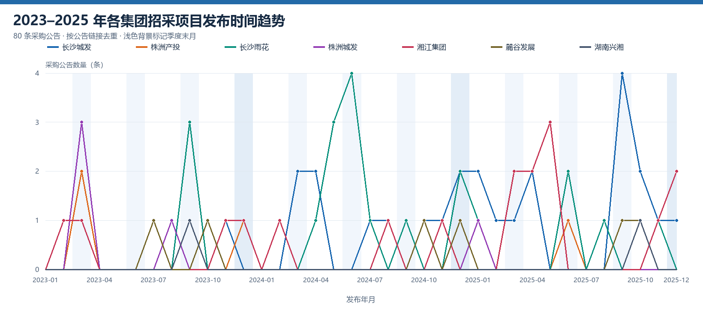
图1-5 采购公告发布星期与季度内分布图
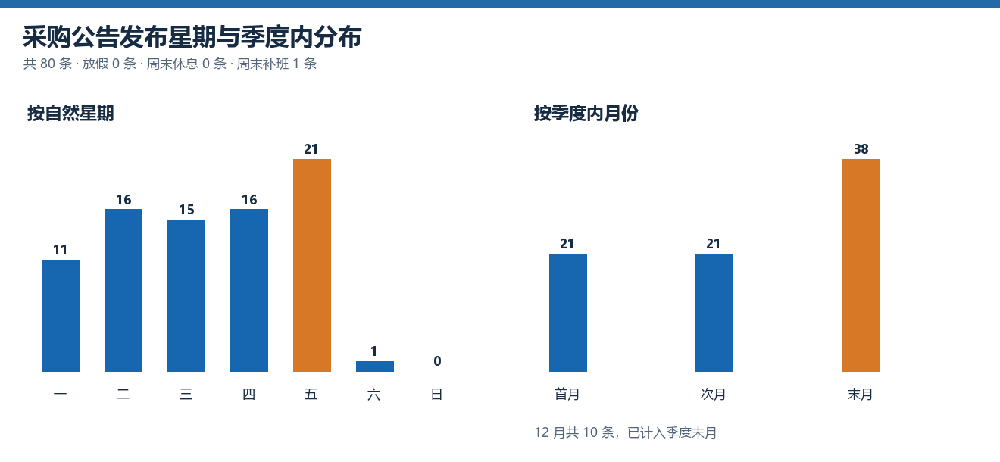
对80条有效采购公告的发布日期进行全景透视，呈现出极其规律的“时间偏好”：
-
季度分布极度倾斜：在季度内的分布中，末月发布量高达38条，占总数近一半；而首月（21条）与次月（21条）平分秋色。结合图1-4的趋势图可见，各集团在特定季末节点（如长沙城发在2025年9月达4条，长沙雨花在2024年6月达4条）存在明显的发布峰值。
-
星期偏好集中于周五：按自然星期统计，星期五发布量最高（21条），其次为星期二（16条）与星期四（16条），星期一发布量最低（11条）。此外，80条公告中仅存在1条周末补班发布记录，其余全部严格限定在法定工作日释放。
【结论与观点】：
-
行为规律：国有企业招采发布深受内部“预算执行考核”与“项目推进节点”影响，普遍形成了“季初酝酿、季中审批、季末（尤其是周五）集中释放”的运作惯性。年底或季度末的集中发布，往往与国有企业的年度预算执行考核或重点项目推进进度相关。
-
操作建议：万源应建立“节点前置与重点监控”机制。每周五下午应设为信息巡检的“黄金窗口”；在每年3月、6月、9月、12月的季末阶段，必须提前预留充足的标书编制团队人力，以应对可能集中爆发的投标任务，安排专人重点监控各大集团的招采平台。
采购流转周期：决策流程高效合规，整体周期呈标准化分布
图1-6 各集团项目采购流程天数对比箱线图
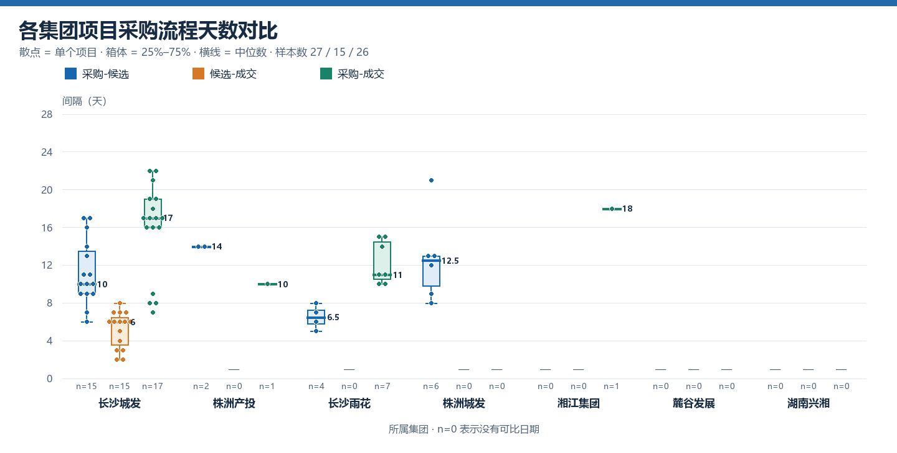
通过提取多维表格中的流转天数数据可以发现：
-
整体周期紧凑：以样本量最大的长沙城市发展集团为例，其从发布采购公告到发布候选公告的中位数为 10天，从候选到最终成交的中位数为 6天，采购至成交的整体中位数仅为 17天。
-
各集团特色差异：长沙市雨花国有资产经营集团流转最快，采购至候选仅需 6.5天（整体11天）；而株洲市城市建设发展集团在采购至候选环节耗时相对较长，中位数为 12.5天，说明其开标及评审过程相对更复杂。
-
公示期严格受控：所有集团“候选至成交”的时间基本被死死压缩在 2-7 天之内，完全符合法定公示期的最短时间要求，没有任何拖沓。
【结论与观点】：
-
流程特征：各集团招采部门在合规前提下，流程推进极为紧凑高效，不存在无故拖延现象，法定公示期严格按规定执行。一旦发布公告，留给供应商的反应时间通常只有短短的一到两周。
-
操作建议：由于流转周期极短（中位仅17天，甚至最短仅9天），万源内部可能存在的传统“串联式”标书审批流程（业务写方案->财务核成本->法务核资质->领导签字）无法适应。必须建立“快速响应绿色通道”：针对高频资质证明和业绩合同建立标准化素材库，实行“并联审批”，确保能在 3-5 天内迅速完成高质量标书的组装与盖章封装，避免因内部流转慢而错失商机。
二、中标单位与市场格局
从汇总项目中提取“状态”为“成交”的项目进行所有中标单位与市场格局分析(项目确定已经进行成交公示公告)。
前置洞察：成交主场高度倾斜，聚焦长沙城发集团“评价规划”与“基准地价”两大主阵地
-
整体极度分散（长尾效应）：在36个有中标单位的项目中，产生了约26家不同的中标机构（含代理）。根据图2-3的分布，单一企业的最高中标频次仅为4次（占比约11%），整体市场集中度极低，属于典型的分散竞争型市场。
-
局部高度集中（分集团视角）：尽管整体分散，但在特定集团的细分赛道上高度集中。例如在城发的“评价规划”领域，佳源、创辉达、山和三家几乎呈垄断态势（拿走了近一半份额）。
-
从成交结构看，已成交的36个项目中，“基础科研”类占比高达80.56%。
-
从采购来源看，绝大多数成交项目（25个）来自长沙城市发展集团，呈现绝对的一家独大态势。
【结论与观点】：
-
核心竞争领域：要分析长沙市场的格局，实质上就是要分析长沙城发集团的招采格局。万源如果不能在城发集团实现突破，就谈不上真正进入长沙国企采购的核心圈层。
-
操作建议：万源在城发的两大主阵地中，“评价规划”赛道（如用地预审）的头部效应较强（佳源、创辉达占据主导），准入门槛（规划+土规双资质）较高；而“基准地价”赛道（如社会稳定风险评估）竞争相对分散。万源可优先选择在“基准地价（社会稳定风险评估）”类项目中采取低价或联合策略切入，积累业绩后再向规划类项目发展。
市场集中度：“大分散、小集中”，属地化与历史业绩构成隐形壁垒
进一步下钻分析，其“评价规划”类项目中，长沙佳源土地规划咨询有限责任公司（23.08%）、创辉达设计股份有限公司（15.39%）及湖南山和勘测设计有限公司（7.7%联合体）占据主导；其“基准地价”类项目中，湖南东固全过程咨询管理有限公司（25%）领跑。
【结论与观点】：
-
市场规律：这说明国企采购虽然名义上公开竞争，但在实际操作中，“历史同类业绩”和“本地化服务资质”形成了极强的隐形壁垒。在特定赛道内，通常是少数几家高频参与企业轮流中标。
-
操作建议：面对这种格局，万源必须采取“错位竞争”策略。应当避免在竞争对手占据绝对优势的“评价规划”领域正面交锋，转而利用自身在土地评估和测绘数据的积累，挖掘“农用地土壤污染状况调查”或“全域土地综合整治”等尚未形成绝对垄断的差异化领域，建立新的竞争优势，再图谋向其他领域渗透。
中标单位画像：头部综合壁垒高筑，中小“专精特新”分食长尾
图2-6 中标单位联合体与并列中标情况
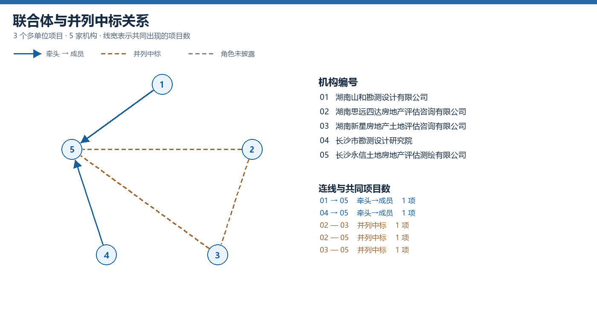
从图2-2、2-3可以看出，中标频次最高的企业集中在少数几家。
-
头部阵营清晰：中标频次最高的是湖南山和（4次，横跨评价规划与测绘）、长沙永信（4次，聚焦评估及农用地，多作为联合体出现）、长沙佳源（3次，高度垄断城发集团评价规划）。
-
湖南山和勘测设计有限公司：横跨“基础科研（评价规划）”与“测绘条块”，显示其具备较强的综合资质。
-
长沙永信土地房地产评估测绘有限公司：主要深耕“评估条块（资产评估及可研）”与“基础科研（农用地）”，且多次作为联合体成员出现（图2-6）。
-
长沙佳源土地规划咨询有限责任公司：高度集中在“长沙城发集团”的“评价规划（用地预审）”领域。
-
-
中小机构活跃：其余约20余家机构中标次数仅为1次，如万维测绘、欣然环境、中联评估等，说明在测绘、土壤污染调查等门槛相对细分的领域，市场依然留给专业型公司充足的空间。此外，图2-3中高频出现的华新项目管理集团有限公司，实质为招标代理机构，非核心业务服务商。
【结论与观点】：
-
市场特征：国企采购市场正在形成“赢者通吃”与“长尾存活”并存的局面。湖南山和、长沙永信等头部企业通过“综合资质叠加”（如山和的规划+测绘能力）或“联合体抱团”（如山和+永信的评估测绘组合）建立起极强的护城河；而中小机构只能退守土壤调查、纯测绘等单点壁垒较低的市场。
-
操作建议：万源作为综合性评估测绘机构，面对主要竞争对手，不宜在单一评估或单一测绘领域进行低效的价格竞争。建议对外营销时强化“土地评估+测绘+规划咨询”的综合打包能力，提升自身在复杂大项目中的入围竞争力。
三、供应商（所有候选单位）活跃度和市场竞争格局
提取汇总的所有项目中包含“候选人信息”的所有候选单位相关数据进行分析。
所有制结构分析：民企主导充分竞争，体制内机构把守高壁垒阵地
图3-1 入选项目数排名前20的候选机构入选项目排名情况
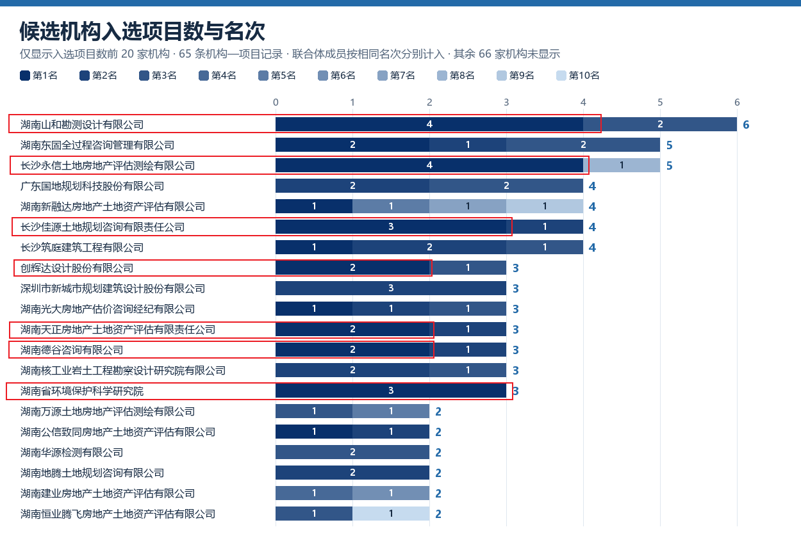
注：红色框线圈出的机构表示只要参与投标，则基本都被项目采购方预选为第一候选/中标单位
表3-1 入选项目数排名前20的机构所有制性质
注：表格展示了主要的活跃单位，部分出现1/2次的单位已合并展示或截取展示
表3-2 大型复杂项目（预算 ≥ 50万）中标单位及性质对照表
根据图2-4、图3-1、表3-1和表3-2，我们可以得出以下关键分析结论：
-
在提取的活跃候选单位中，民营企业占比超过80%，构成了参与竞标的绝对主力。
-
在预算超过50万的大型、复杂项目中，虽然也有佳源、创辉达等民企头部企业中标，但凡涉及大片区统筹或复杂重污染地块调查的顶级项目，最终均由湖南省环境保护科学研究院、长沙市勘测设计研究院等事业单位拿下（或作为牵头方）。它们在技术壁垒最高的项目上起到了绝对的主导作用。
-
国企/事业单位在数量上不占优，但往往在大型复杂项目中占据头部位置。
-
在联合体项目中，多呈现“民企龙头+国企/事业单位”的组合（如山和+永信、环保院+地质院）。
-
【结论与观点】：
-
市场规律：国企采购的“智力服务类”市场准入门槛对民企高度开放，形成了充分的市场化竞争。但事业单位和国企凭借强大的资质壁垒和公信力，在涉及公共利益的大型项目（如大片区控规、大型土壤复测）中充当了“压舱石”。
-
操作建议：万源作为民营企业，在常规评估和测绘领域面临激烈的市场竞争。建议在自身资质或业绩暂不足以独立承接高门槛项目时，积极寻求与体制内机构（如省环科院、市勘测院）组建联合体，借用其资质背书参与大型项目，获取高价值业绩。
头部效应与“长尾”市场：赛道分化严重，“熟人生态”筑起属地化护城河
图3-2 中选项目排名前20的机构对应项目业务条块
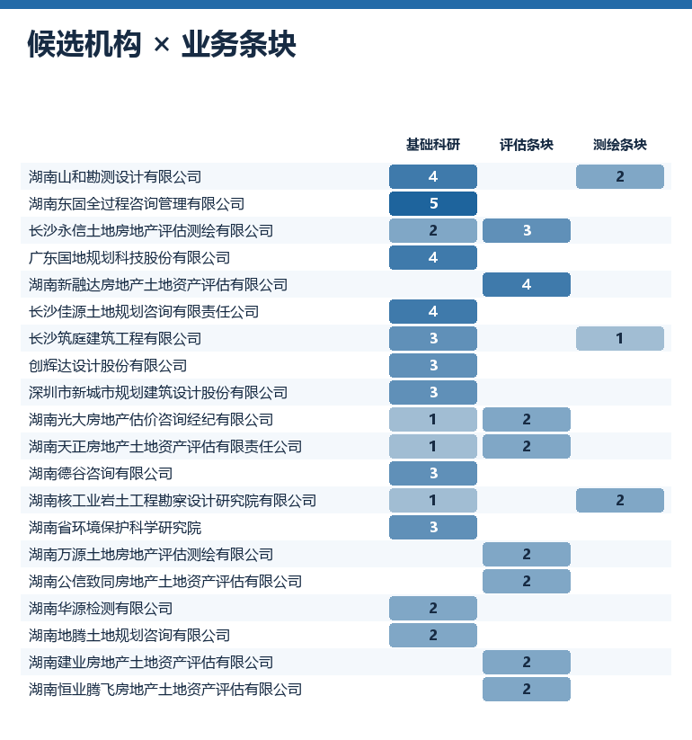
仅显示入选项目数前 20 家机构（其余 66 家未显示）。格中数字为候选项目数。项目有多个分类时，每个对应分类各计一次，分类合计可超过项目数。
图3-3 中选项目排名前20的机构对应项目细分条块
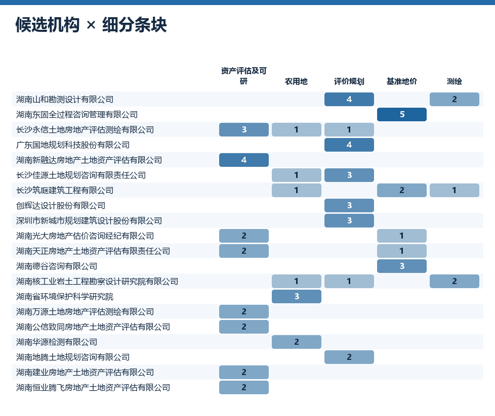
项目数前 20 家机构（其余 66 家未显示）。格中数字为候选项目数。项目有多个分类时，每个对应分类各计一次，分类合计可超过项目数。
根据图3-2（候选机构入选项目数与名次）、图3-3（业务条块）、图3-4（细分条块）可知：
-
高频参与企业显现：高频出现的单位（出现≥4次）共7家，全部为民营企业，且高度集中于特定细分领域。
-
湖南东固全过程咨询管理有限公司（5次）：高度集中在“基准地价（稳评）”领域（5次）。
-
湖南山和勘测设计有限公司（6次）：横跨“评价规划”与“测绘”，呈现“双修”特征。
-
长沙永信土地房地产评估测绘有限公司（5次）：主攻“资产评估”与“农用地”调查。
-
-
长尾极其分散：近40家单位仅出现过1次。
【结论与观点】：
-
市场特征：市场不存在全能的寡头企业，而是由几家区域优势企业在各自的优势领域（如湖南东固做社会稳定风险评估、长沙佳源做用地预审）建立了极高的属地化壁垒。中小机构获取项目具有较大的偶然性，难以建立持续获客能力。
-
操作建议：万源必须放弃全面撒网的策略。面对竞争对手在其核心领域的优势（东固在稳评领域的绝对统治，以及永信在资产评估领域的规模效应），应避免进行低效的价格竞争，转而在自身具有历史底蕴但头部尚未完全垄断的差异化市场寻找突破口。
跨集团活跃度与“抱团”策略：属地化特征显著，联合体成为跨专业破局利器
表3-3 七家“高活跃度”机构投标集中度（对应图3-1）
图3-4 候选机构跨集团活跃度
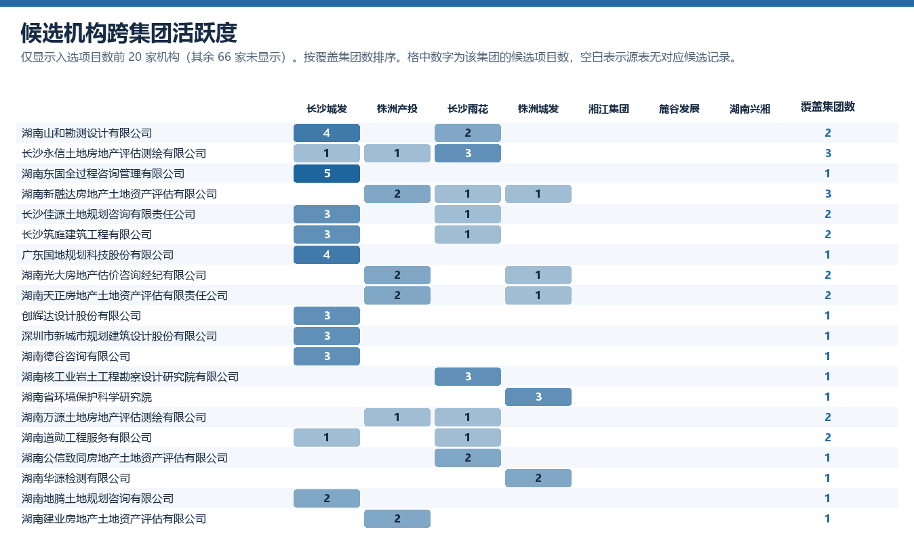
项目数前 20 家机构（其余 66 家未显示）。按覆盖集团数排序，格中数字为该集团的候选项目数，空白表示原表无对应候选记录。
表3-4 联合体“抱团”竞标组合分析表
- 从“跨集团活跃”深化为“主场霸榜与客场陪跑”的属地壁垒
结合表3-3与图2-4可知，虽然部分机构实现了跨集团覆盖，但“名次分布”暴露了极强的属地垄断特征：
-
跨集团活跃度低：能覆盖3个及以上集团的机构极少。例如，湖南东固全过程咨询管理有限公司在长沙城市发展集团参与5次，但在其他集团未涉足。
-
绝对主场垄断：以长沙永信为例，在长沙市雨花国资的3次入选全部斩获第1名；但在株洲国资入选1次则掉至第8名。长沙佳源在长沙市城投3次入选全部第1，但在雨花国资则是第2名；湖南省环科院在株洲清水塘3次入选也全部包揽第1。
-
跨区/跨集团陪跑：如湖南天正虽然跨入了株洲国资和株洲低空，但拿到的全部是第2名；深圳新城市（图3-5所示）入选3次也均未中标。这说明在国企采购中，“强龙难压地头蛇”，非核心盘业务的渗透极难拿第一。
- 头部机构的“超高转化率”（中标率）
表3-3显示，高活跃度机构的“入选即中标”概率极高。比如长沙佳源（入选3次/3次第一）、长沙永信（雨花国资主场3投3中）、省环科院（株洲清水塘3投3中）。这种近乎100%的转化率，不仅证明其技术实力，也侧面反映出在特定采购人处，优质供应商的“圈子化”已经形成，外部机构极难插足。
- 联合体“抱团”本质：从“资质互补”走向“利益结盟与资源置换”
表3-3与表3-4结合来看，长沙永信的轨迹极为典型：它既能在雨花国资独立霸榜拿第一，又能在“跳马镇项目”中作为民企（长沙市勘测院）的成员方，还能在“时光路”中给同为民企的湖南山和当成员方。这说明：
-
联合体深度绑定：出现了明显的以牵头人带成员方的合作模式，以及并列中标关系。当项目需要跨专业（如“规划+评估”、“环保+地质勘测”）或资质要求极高时，市场会自发形成联合体。联合体不是简单的“缺资质补资质”，而是“强强资源置换”。头部企业通过带小弟、或者加入别人的局，来稳固自己的江湖地位。
-
“体制内背书+民企执行”成为降维打击的标配：数据表明，含“事业单位/国企”的联合体占比达 75%。民企（如山和）倾向于找民企（如永信）互补；而顶级重难点项目，则多由事业单位（省环科院）牵头，拉上国企（地质院）共同实施，凭借强大的公信力拿单。省环科院（事业单位）带地质院（国企）垄断土壤调查复测；市勘测院带永信拿全域整治。这种组合在综合评估法中，几乎能让评委在“资信业绩”上打出满分。
【结论与观点】：
-
市场特征：
-
“山头主义”固化：国有企业采购带有极强的属地化特征，外部企业难以跨区域或跨领域渗透。即使是长沙本地的头部企业，也呈现出“各占山头（如佳源占城投、永信占雨花）、交叉掩护（联合体互相带）”的格局。非主场作战，大概率只能拿到第2名或陪跑。
-
复合大标全面“俱乐部化”：跨专业的大项目，已经变成了“事业单位/国企牵头 + 地方地头蛇/专业民企配合”的少数人游戏。单一民企去拼大包，在资格门槛和技术评分上极其吃亏。复合型项目不断增加，独立承揽高端项目的难度加大。
-
-
操作建议：万源应当构建战略联盟。一方面，尝试与在“规划/测绘”领域强势的企业结对，作为成员方切入大项目；另一方面，可作为牵头人联合科研机构，共同竞标综合性大标，实现优势互补。大型项目如果缺乏民企的效率，或者缺乏事业单位的资质背书，是很难拿下的。万源目前的体量如果单独去拼‘全域整治’、‘大型土壤调查’是非常吃力的。因此，对于万源有优势的专业领域，可以尝试作为牵头方，拉拢国企或科研院所来增加自己的技术分权重。主动寻求与省环科院、市勘测院、地质院这类体制内机构建立合作关系，利用他们的资质去拿大项目，我们作为成员方负责评估或测绘的落地执行，这是万源切入大型复杂项目的一条捷径。
湖南万源竞争位次剖析及突围建议
综合图3-1至图3-4：
-
活跃度落后：万源在68个入选机构中，仅出现2次（株洲国投包2、雨花国资评估），排在第5和第3名，最终均未中标。对比长沙永信（5次）、山和（6次）等头部企业，万源的“上榜率”和“转化率”偏低。
-
赛道竞争激烈：在万源参与的“资产评估及可研”领域，长沙永信、湖南新融达、湖南天正等企业已经形成了明显的规模效应。
【结论与观点】：
-
核心问题：万源目前面临“具备入围实力，但缺乏绝对优势”的瓶颈。在传统的资产评估领域，正面临头部企业的强力压制。
-
战略突围建议：
-
战术转移：在资产评估领域，避开头部企业的常规业务，专攻“涉税评估”、“司法评估”等特定行业资产评估，建立专业标签。
-
产品升维：将单一的评估或测绘打包成“资产盘活全流程咨询”（含测绘摸底+价值评估+规划策划），以此差异化优势争取注重资产运营的客户。
-
重点突破：结合跨集团活跃度数据，万源下一阶段应重点突破项目量最大、最集中的长沙城市发展集团。针对其“基准地价（如社会稳定风险评估）”类项目制定专项投标策略，作为打入其体系的突破口。
-
四、项目特征与门槛分析
资质门槛：呈现“复合化”与“高等级”趋势，人员持证要求严苛
提取“资质要求”列非空的项目进行分析。
图4-1 各细分条块高频资质要求词云分布图
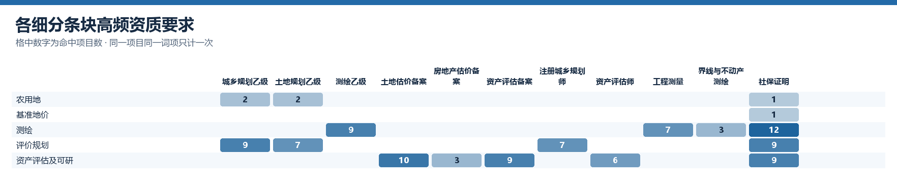
资质图关键词注释: 城乡规划乙级：投标机构的城乡规划编制资质等级。原文写「乙级及以上」时，乙级是最低等级要求。
土地规划乙级：投标机构的土地规划等级证书要求。观音港路案例明确写的是土地学会颁发的土地规划机构乙级及以上等级证书。
测绘乙级：投标机构的测绘资质等级。公告还可能要求资质覆盖指定专业类别。
土地估价备案：要求机构提交开展土地估价业务的备案证明或备案信息。
房地产估价备案：要求机构提交开展房地产估价业务的备案证明或备案信息。
资产评估备案：要求机构提交开展资产评估业务的备案证明或备案信息。
注册城乡规划师：人员持证要求，常针对拟任项目负责人。公告可能同时要求证书有效、注册单位与应选单位一致。
资产评估师：人员资格要求，可能针对项目负责人或拟投入团队。
工程测量：测绘专业范围之一。出现在资质条款中时，通常用于核对机构的测绘资质是否覆盖该业务。
界线与不动产测绘：测绘专业范围之一，涉及界线和不动产相关测绘。
社保证明：用于证明拟投入人员与应选单位的用工关系。缴纳主体、连续月数和可接受的证明期间按各公告执行。
表 4-1 部分项目资质关键条款
通过对招标文件中“资格要求”字段的解析，可以发现各集团对供应商的资质要求已形成明确的专业壁垒：
-
规划与用地类：普遍要求具备“城乡规划编制乙级及以上”或“土地规划机构乙级及以上”双资质。例如，长沙城发的《观音港路等7个项目集中采购》明确要求同时具备上述两项资质。
-
测绘类：普遍要求“测绘乙级及以上”，且专业范围必须包含“工程测量、界线与不动产测绘”（如雨花国资多测合一项目）。
-
评估类：常要求同时具备“土地估价机构备案”、“房地产估价机构备案”及“资产评估备案”（如雨花国资2024年资产评估项目）。
-
人员门槛：高价值项目不仅看企业资质，还强制要求项目负责人持有“注册城乡规划师”或“资产评估师”，并提供连续三个月社保证明。
【结论与观点】：
-
门槛特征：国企招采的“入场券”越来越贵。单一资质已难以通吃，“双资质”甚至“多资质”叠加成为中高端项目的标配。
-
操作建议：万源需全面盘点现有资质，如在某些复合型项目上存在短板，应尽快启动资质升级或引入持证人员。同时，在投标中遇到硬性双资质门槛时，优先考虑与互补型企业组建联合体，以实现资质破局。
评标方法：因“项”制宜，低价法与综合评估法双轨并行
提取“评审办法”列非空的项目进行分析。
图4-2 各集团评审办法分布
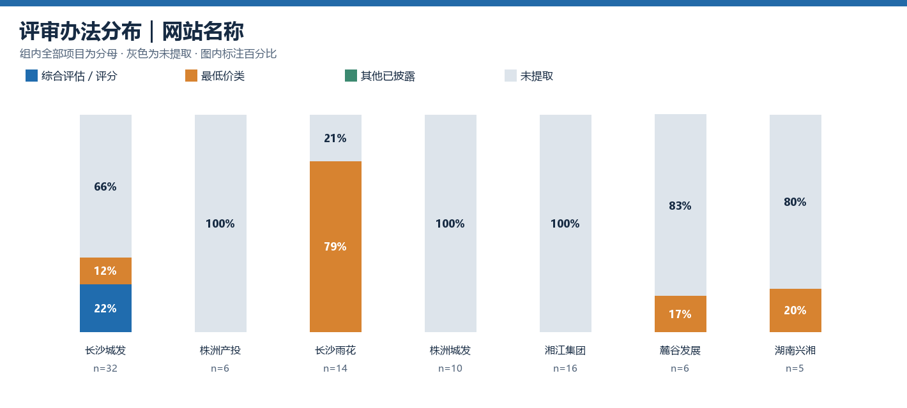
图4-3 各业务条块评审办法分布
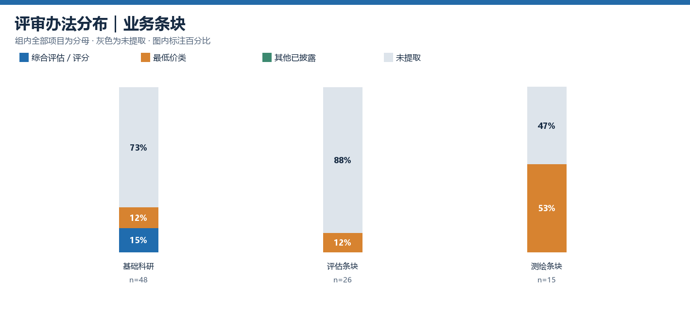
表4-2 项目评审办法明细
数据表明，不同集团和不同类型的项目在评标办法上存在显著差异：
-
长沙城发集团：对于复杂的前期咨询（如中青路用地预审）多采用综合评估法，看重技术方案与团队实力；而对于标准化程度较高的服务（如时光路社会稳定风险评估、牛角塘土壤调查），则严格采用经评审的最低价法。
-
长沙市雨花国资集团：绝大多数项目（如多测合一、常规资产评估）采用了最低价法，对价格极其敏感。
-
株洲城发与产投：多采用“比选”结合综合评分的方式，对业绩和方案的权重较高。
【结论与观点】：
-
评标规律：技术壁垒高、非标化项目倾向于“拼技术（综合评估）”；技术成熟、流程标准化的项目倾向于“拼价格（最低价法）”。
-
操作建议：万源在投标前必须明确项目所属类型和评审方法。面对综合评估法，标书重点应放在技术方案的针对性、类似业绩的厚度以及项目负责人的履历上；面对最低价法，内部成本测算必须精准，在保证利润底线的前提下，报价策略需更具攻击性。
流标与终止情况：双重流标现象频发，多因“供应商不足”或“预算偏差”
按照具体的特殊公告进行统计分析（不是按照项目统计，同一个项目可能包含多个终止/流标公告）
图4-4 流标与终止原因分布
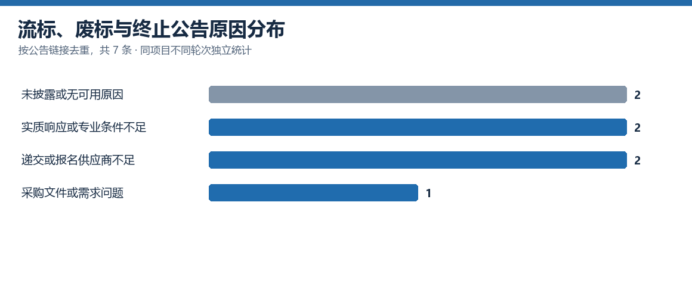
表4-3 流标终止逐公告证据
尽管国企采购流程严格，但并非所有项目都能一次成功，数据中出现了5个典型的流标/终止案例：
-
长沙市雨花国资集团的“天华路、湘华路道路项目多测合一”经历了首次招标流标（2024-06-20），重新发布第二次招标后，再次因递交响应文件的单位不足三家而流标（2024-07-01）。
-
长沙市雨花国资集团的“林科路用地报批咨询”同样经历了首次流标，在启动第二次询价后才顺利推进。
-
株洲市产投集团的“大美新芦淞股权评估”首次因符合专业条件的供应商不足三家而废标，第二次才成交。
-
长沙城发集团的“长株潭生态绿心稳评”及麓谷集团的“投资性房地产评估”均出现过因招标文件瑕疵或内部需求调整而终止的公告。
【结论与观点】：
-
流标诱因：从数据推断，流标的核心原因通常有两点：一是预算过低或付款条件严苛，导致对成熟供应商缺乏吸引力；二是资格条件设置过高或存在排他性，导致满足条件的供应商不足三家。
-
操作建议：万源可以将这些“流标重招”的项目视为“二次捡漏”的黄金机会。当项目流标后重新发标时，招标人往往会反思并适当放宽条件或调整预算。万源应密切追踪此类项目的二次公告，在门槛可能降低时迅速切入，往往能以更优的条件中标。
五、围标风险识别
基于 7 家国企集团 89 个招采项目的量化扫描——从竞争结构、报价结构、评分结构中寻找串通投标的可观测痕迹。
分析基准与样本口径
2023—2025 年公开招采公告 · 89 条项目记录 · 76 个服务类项目 · 77 家参与投标机构
为避免不同章节的样本口径混淆，对本章分析每一类指标的分析总体作如下界定，全部图表与结论均以表5-1 为基准：
图5-1 数据覆盖漏斗：从 89 条项目记录到 23 个可比最高限价的项目

注：
数据来源：7 家集团招采平台公告。40 条记录仅披露成交结果、未披露中标候选人名单，无法进行竞争结构判断。 【样本口径】筛选列：项目名称、是否代理类项目、候选供应商名称与报价、三个以上候选人详情、采购金额/预算、中标单位名称、中标金额、状态；按代理类 4 个项目名称关键词剔除 13 条，按「框架协议」「第一阶段征集」再剔除 2 条；末层限定在 30 个可比报价样本内；样本 89→76→36→30→20。不包含框架协议。
76 个服务类项目中只有 36 个（47.4%）披露了中标候选人名单，其余 40 个项目在成交后无法看到"谁参与了竞争"。在信息不披露的情况下，外部监督只能看到结果，看不到过程。
表5-1 分析基准与样本口径
三条推定规则： ① 推定成交。14个项目已发布中标候选人公告、尚未发布成交公告，本报告以第一中标候选人推定为成交供应商，并在明细中标注为"推定成交"，与"实际成交"区分。 ② 联合体计数。候选人名称中包含联合体的，其成员法人分别计数，因此"投标人数量"指法人数量，而非投标文件份数。 ③ 数据缺失不插补。无法计算的维度直接标注为数据不足，不计入该项目的分母，也不以行业均值替代。
方法声明：本报告识别的是"具备串通投标外观特征"，不构成违法认定。真正的串通投标需要投标文件雷同性、网络地址与设备指纹、保证金流水、标书编制者属性等证据支撑；样本量有限时，单个项目即可改变若干百分点的比例，因此结论以结构性特征表述，而非精确比例。
表 5-1-2 排除的框架协议入围项目清单
注：两条记录的细分条块均为「资产评估及可研」，采购金额/预算为空，报价形式为下浮优惠率而非金额，公告至响应截止均为 12 天；公告披露的 10 家机构为入围名单，不存在单一中标供应商。本版本据此将其排除：若按「候选人」口径纳入，其 10 家入围机构会被误当作同一标的的投标人、第一中标候选人会被误推定为唯一成交供应商。
识别框架：把"围标"拆成 7 个可观测信号
对原始数据进行了深度的“降噪”与“重构”，提炼出可用于量化分析的关键指标：竞争结构、报价结构、评分结构、程序安排。这四个维度都可以从公开公告中被量化。
表5-2 七维围标信号识别体系与判定阈值
注：①—⑥ 维度各自独立计分，按项目实际可得的维度满分归一化为 0—100 分的风险得分（60 分及以上为高风险，40—59 分为中风险）。第 ⑦ 维度因缺少工商股权数据，仅作定性提示。
七维体系的计分规则如下，每一维按档位给出固定分值，最终以"该项目实际可得满分"为分母归一化，避免数据缺失的项目被系统性低估：
表5-3 七个维度的计分档位
注意：风险得分 =（各维度实际得分之和）÷（各维度实际计分满分之和）× 100，结果四舍五入为整数；可得满分低于 50 分的项目不予评分，标注为"数据不足"。
总体风险画像：36 个可评分项目的风险分层
项目最终风险得分计算方式
7 个信号各自分档给原始分，最后按“该项目实际可得的满分”做归一化，所以分数表达的是“在能查到的维度里，它有多像围标”，而不是绝对分值；这也决定了它适合做横向排序，不适合跨项目直接比差值大小：
Plain Text
单项得分 s = 各维度实际得分之和
可得满分 mx = 该项目"有数据"的维度满分之和（25/35/25/20/10/15 的组合）
score = round(s / mx × 100) ，且仅当 mx ≥ 50 才计算，否则记"不可评分
-
mx 的取值只有这几种：130（六维齐全）、110、105、100、75、70、50、40、25、15；
-
mx ≥ 50 的门槛就是“31 个可评分项目”的来源：另外 45 个要么只有 D1（24 个，mx=25）、要么只有 D7（18 个，mx=15）、要么 mx=40，都缺报价、限价等关键维度，分母太小、结论不稳，因此不给分；
-
归一化的意义：数据缺失时不硬按 130 折算，避免“没披露得分”的项目被系统性低估。
分层：≥60 高风险(7) / 40–59 中风险(7) / <40 低风险(17)。
如：
英东实业地块土壤污染调查（复测）：3 家投标（+18）、第2名偏离 0.28%（≤1%，+20）、CV 0.24%（+15）、中标价/限价 99.72%（+25）、技术分断层 37 分（+20）、准备期不加分、固定班底不加分。
-
s = 18+20+15+25+20 = 98
-
mx = 25+35+25+20+10+15 = 130
-
score = round(98/130×100) = 75 → 高风险首位 ✓
再如林科路（第二次）：3 家(+18)、偏离 1.57%(≤2%) （+15）、CV 0.83% （+15）、比值 97.08% （+18）、准备期 5 天 （+10） → 76/110 = 69。
整体风险评估结果
按表5-1 的七维体系对数据足够的 36 个项目评分，结果呈现明显的两极分化：高风险 7 个（18.4%）、中风险 10 个（26.3%）、低风险19个（55.3%）。风险并非均匀分布，而是集中在两个片区、两类标的。另有 38 个项目因缺少候选人、报价与综合得分数据，可得满分低于 50 分，未纳入评分。
图5-2 项目风险等级分布（36 个可评分项目）

风险得分为七个维度实际得分之和除以实际计分满分后乘以 100。维度缺失的项目按可得维度归一化，避免因数据缺失被误判为低风险。
【样本口径】筛选列：候选供应商名称、报价、报价原文、得分、采购金额/预算、中标金额、公告与截止日期、网站名称；可得满分不低于 50 分才计分，框架协议已排除
图5-3 36个项目风险得分排名（红色为高风险区）

排名前五的项目分别指向不同的风险形态：
-
英东实业公司地块土壤污染状况调查（复测）项目（75 分）——报价零离散、中标价接近最高限价、综合得分差距显著三项特征同时出现：三家报价分别为 338,160 元、339,100 元、337,125 元，极差 1,975 元；成交价占最高限价 99.72%；综合得分领先第三中标候选人 37.1 分。
-
林科路（双塘路—荷叶冲路）用地报批咨询服务（第二次）（69 分）——报价高度接近且程序期极短：三家报价集中在最高限价的 97%—99%，公告发布至响应截止仅 5 天。
-
观音港路（湘江大道—大托路）等 7 个项目用地预审与规划选址论证等技术服务集中采购（标段 1）（69 分）——长期固定合作与连续中标：同一中标供应商在同一采购人处已中标 3 次，三家报价变异系数仅 1.01%。
-
长沙市雨花区跳马镇全域土地综合整治技术服务项目（64 分）——成交价占最高限价 98.41%，第二中标候选人报价偏离 0.26%，综合得分领先第三中标候选人 19.05 分。
-
南山公园一期建设项目临时用地土地复垦（64 分）——报价高度集中且无其他异常：第二中标候选人报价偏离 2% 以内，报价变异系数低于 1.5%，属于典型的报价协商型特征。
表5-3 高风险项目清单（风险分 ≥60）
注："投标法人"指公告披露的候选供应商法人数量，联合体成员分别计数；综合得分差距为中标供应商与第三中标候选人的得分之差。
信号逐一验证：六个异常面
竞争充分性：3 家不是竞争的结果，而是竞争的上限
图5-4** **披露候选人项目的投标家数分布

如果竞争是自然发生的，投标人数量应呈"中间多、两头少"的分布——4 家至 8 家最常见，2 家或 10 家都罕见。但实际分布是：30 个项目恰好 3 家（78.9%），1 个项目 2 家，4 个项目 4 家，1 个项目 7 家，2 个框架协议项目 10 家，3 家处出现断崖式堆积。
3 家是《中华人民共和国招标投标法》第二十八条规定的"投标人少于三个的应重新招标"的红线。值得注意的是，4 个项目之所以显示 4 家，是因为候选人名单中包含联合体，按法人口径拆分后计数；其投标文件份数仍为 3 份。这意味着，若按投标文件份数统计，恰好 3 家的比例将进一步上升至 86.8%（33 个）。
当一个项目恰好 3 家、且下一次同类项目还是这 3 家时，更合理的解释不是"市场上只有 3 家具备资格"，而是"只有 3 家被允许参与"。观音港路项目标段 2 仅 2 家投标，已低于公开招标的法定最低投标人数量，本应重新组织采购，却直接完成了评审并成交。
注：第二十八条 投标人应当在招标文件要求提交投标文件的截止时间前，将投标文件送达投标地点。招标人收到投标文件后，应当签收保存，不得开启。投标人少于三个的，招标人应当依照本法重新招标。
结论：竞争在"数量"上合规、在"结构"上收缩。3 家常态化意味着项目只要再流失 1 家就必须重招，这恰好是"围标成本最低、风险最小"的配置——既能满足形式要求，又能让每一家的份额可控。
监测建议：把"同一采购人连续 3 个同类项目的投标人名单重合度达到 80% 以上"设为一级预警规则。真实的开放竞争，名单会自然换人；名单长期不变，说明准入环节受到控制。
报价结构：从"各自测算"退化为"协商序列"
图5-5 第二、第三中标候选人报价相对第一中标候选人的偏离比例（30 个可比项目）

偏离比例 =（该名次报价 ÷ 第一中标候选人报价 − 1）× 100%，负值表示报价低于第一中标候选人（在综合评估法下仍可能落败）。浅红色带为 ±2% 的密集区间。30 个可比项目中有 2 个项目第二中标候选人报价高出 30% 以上（牛角塘安置房地块 71.72%、圭塘河二期增补 182.21%），属真实竞争分散，为保持坐标可读性未在图中显示。
【样本口径】筛选列：第一/二/三候选供应商报价、报价原文、名称、三个以上候选人详情；至少 2 家报价齐全且单位一致，并排除候选人数不少于 5 家的入围制项目；样本 30 个。不包含框架协议
独立编制的报价，正常应有 5%—15% 的分散程度：不同机构的人力成本、外协价格、利润率假设都不相同。但在这 30 个项目里，13 个（43.3%）的第二中标候选人与第一中标候选人的报价偏离不到 2%，5 个不到 1%。
更值得关注的是报价呈现的阶梯特征：
-
林科路（双塘路—荷叶冲路）用地报批咨询服务（第二次）：139,800 元 / 142,000 元 / 142,500 元（最高限价 144,000 元，三家均在 97%—99%）
-
红星片区城市更新项目天华、商贸城、板塘更新单元控制性详细规划修改交通影响评价报告：150,000 元 / 152,000 元 / 155,000 元（等差 2,000 元、3,000 元）
-
英东实业公司地块土壤污染状况调查（复测）项目：338,160 元 / 339,100 元 / 337,125 元（极差 1,975 元，变异系数 0.24%）
-
时光路（天心湖路—健悦路）等 6 个项目社会稳定风险评估技术服务集中采购：64.80% / 64.94% / 68.27%（第二中标候选人仅差 0.14 个百分点，综合得分差 0.22 分）
另有一类反向信号：报价更低却排名靠后。清风路等六个项目用地预审与规划选址论证项目中，第二中标候选人报价 57.5%（更低）却输给第一中标候选人的 58.5%；观音港路项目标段 2 中，第二中标候选人报价 92.84%（更低）却输给第一中标候选人的 99.74%；G354 项目中，第三中标候选人报价 417,500 元（最低）却排在第三。当报价不再是竞争变量时，"报多少"就退化为配合程序的动作。
结论：当报价离散程度压缩到 1% 以内、且呈现等差或等比例的阶梯，报价更像协商后的报价序列，而非独立测算的结果。这一特征在《中华人民共和国招标投标法实施条例》第四十条中对应的正是"投标报价呈规律性差异"。
价格竞争强度：一边让利四成，一边让利不足百分之一
图5-6 中标价（或第一中标候选人报价）占最高限价的比例（23 个可比项目）

比例越接近 100%，说明价格竞争越弱、预算被用满。柱体颜色按档次区分：红色为 99% 及以上、橙色为 95% 及以上、蓝色为 80%—95%、浅蓝为 80% 以下。数据取自中标金额或第一中标候选人报价（金额型）；35 个可核算项目中有 8 个项目的成交金额被登记为折扣率、4 个项目缺少成交金额，共 12 个已剔除，图中为 23 个。 【样本口径】筛选列：采购金额/预算、中标金额、中标单位名称、第一候选供应商报价及报价原文；要求金额型成交价与预算齐全且比例在 0.05 至 1.05 之间；样本 23 个，为独立指标。不包含框架协议
同一批采购人、同一类服务，价格表现却分为两个区间：
-
长沙市雨花国有资产经营集团有限公司的多测合一与测绘类项目：成交价为最高限价的 55.93%—63.70%，实际让利 36%—44%。
-
株洲市城市建设发展集团有限公司的土壤污染状况调查复测项目：成交价为最高限价的 99.72%、99.87%、99.91%，让利 0.09%—0.28%。
这两组数字说明：该市场完全具备四成以上的降价空间，复测项目的接近满额成交不是成本所限，而是缺乏竞争。当一个项目的成交价与最高限价只差 840 元（972,540 元与 971,700 元）时，最高限价的编制依据本身就值得复核——它究竟是独立测算的结果，还是参照某一家的报价倒推而成。
结论：价格竞争在部分标段被完全关闭。当中标价接近最高限价、同时出现明显的综合得分差距时，项目实质上是先定人、后走流程，价格环节仅承担形式合规功能。
评分结构：综合得分差距是最大的风险敞口
图5-7 中标供应商与第三中标候选人综合得分对比（17 个披露综合得分的项目）

灰色为第三中标候选人综合得分，蓝色为中标供应商综合得分。两者差值即综合得分差距，红色标注为差距 20 分及以上的项目。
【样本口径】筛选列：第一/二/三候选供应商得分、三个以上候选人详情；至少 2 家披露综合得分，框架协议 2 条已排除.
株洲市城市建设发展集团有限公司 4 个土壤污染状况调查相关项目的得分结构高度一致：中标供应商 81.66—93.85 分，第二、第三中标候选人 52.55—74.63 分，综合得分差距 21.1—37.1 分；而同期报价差异仅 −8.5% 至 +0.3%。在综合评估法下，技术部分通常占 60%—70%，30 分的差距意味着报价再低也无法追回。
综合得分差距通常来自三项：类似业绩、项目人员配置、技术方案。这三项恰恰是最容易被量身定制的部分——把业绩要求写为"近 3 年完成过某类地块的调查"，把人员要求写为"具有某类证书的项目负责人"，就能在合法形式下把大部分潜在投标人挡在门外。
结论：综合得分差距与报价高度接近同时出现，是定向采购的典型组合：用评分锁定结果，用报价配合完成形式合规。相比直接设置歧视性条款，这种方式的隐蔽性更强，也更难被认定为违规。
主体行为：稳定中标方与稳定陪跑方
图5-8 机构与项目同场关系网络（参与投标 2 次及以上的机构）

节点大小表示参与投标次数，节点颜色：红色为从未中标、蓝色为有中标记录；连线粗细表示两家机构的同场次数。连线密集的簇即长期固定合作组合。 【样本口径】筛选列：第一/二/三候选供应商名称、三个以上候选人详情、中标单位名称；同一项目内两两组合，保留参与 2 次及以上机构，框架协议项目不参与组合；样本 77 家机构、19 节点 / 23 连线。不包含框架协议。
网络图按业务条块顺序排列，形成三个相对独立的连接簇——簇内连线密集、簇间几乎没有连线，这正是长期固定合作组合的可视化特征：
-
用地预审与规划选址类：湖南山和勘测设计有限公司、深圳市新城市规划建筑设计股份有限公司、创辉达设计股份有限公司、长沙佳源土地规划咨询有限责任公司、广东国地规划科技股份有限公司相互同场 2—3 次。其中长沙佳源参与投标 4 次、中标 3 次；广东国地参与投标 4 次、中标 0 次。
-
社会稳定风险评估类：湖南东固全过程咨询管理有限公司、湖南德谷咨询有限公司、长沙筑庭建筑工程有限公司、湖南通达易检工程技术有限公司两两同场 2 次，形成较为稳定的组合关系。
-
资产评估类：湖南天正、湖南光大、湖南新融达、湖南建业、恒业腾飞 5 家机构在株洲国投集团框架协议的两个包件中同时出现，天正、光大在两个包件中均居前三位。
图5-9 参与投标 2 次以上且从未中标的机构

柱长为参与投标次数，全部为 0 次中标。框架协议入围类项目中"未中标"指未进入入围名单，需与一般项目区别解读。
广东国地规划科技股份有限公司的行为轨迹尤其典型：参与投标 4 次，4 次进入前三名，4 次未中标，且每次报价都紧贴中标方（−6.92% 至 +2.72%）。这个位置稳定得不像偶然——一个真正希望中标的机构，不会每次都精确地报在"差一点"的位置上。
结论：市场已分化为稳定中标方与稳定无中标记录方两个群体。高频进入前三名、零中标、报价长期高度接近，这三项同时成立时，其投标文件是否由同一主体编制，值得核查。
程序安排：5 天是最廉价的排他手段
图5-10 公告发布至响应截止的天数分布（53 个可核算项目）

天数按自然日计算。红色柱为 5 天以内的项目（12 个，占 22.6%）；折线为累计占比。 【样本口径】筛选列：首次采购公告日期、首次公告日期、响应截止时间；天数差保留 0 至 400 天，框架协议 2 条已排除；样本 53 个。不包含框架协议。
53 个可核算项目中，公告发布至响应截止的中位数只有 8 天，12 个项目（22.6%）不超过 5 天，最短的为 0 天（公告当日即截止）；24 个项目（43.6%）在 7 天以内。
《中华人民共和国政府采购法》要求公开招标公告发布至投标截止不少于 20 日；竞价、比选等非招标方式虽无强制期限，但 5 天以内意味着：外地机构来不及组建团队，需要组成联合体的机构来不及完成内部审批，需要现场踏勘的机构来不及安排行程。不需要设置任何歧视性条款，只要把时间压缩到其他机构来不及，就能实现定向采购。
结论：短周期是排他性最强、成本最低、最难被认定为违规的手段。它与"恰好 3 家投标"叠加时，入围名单在公告发布前既已确定的可能性显著上升。
防范建议：非招标方式公告期不低于 5 个工作日、重大项目不低于 10 日，设为组合预警规则。
3.7 关联关系：需要进一步核查的线索
在缺少工商股权数据的情况下，仅从名称与联合体结构可以观察到线索：
- 同字号多法人主体：湖南和安咨询管理有限公司 与 湘西和安咨询管理有限公司 同时活跃于长沙城市发展集团有限公司的社会稳定风险评估类项目，前者在航迹大道项目列第二中标候选人，后者在长株潭生态绿心项目中标、在强体路项目列第三中标候选人。同一字号的两个主体在不同项目中交替出现，需要核实是否存在股权或实际控制人关联。
最终查找湘西和安咨询管理有限公司企业信息发现，湖南和安咨询管理有限公司 与 湘西和安咨询管理有限公司有股权关联。

https://aiqicha.baidu.com/company_detail_27940765188325
三个高风险场景复盘
把分散的指标还原为三个完整场景，更容易看清串通投标在这类项目中的具体运作方式。三个场景分别代表三种形态：片区打包型、标段切分型、框架入围型。
场景一 株洲市土壤污染状况调查四连包：片区打包与评分锁定
株洲市城市建设发展集团有限公司在同一时段连续发布 4 个土壤污染状况调查相关项目，最高限价合计 314.73 万元。4 个项目的表现高度一致：
表5-4 株洲市 4 个土壤污染状况调查项目的竞争结构
注：4 个项目均处于候选人公示后、成交公告发布前的状态，成交价按推定成交规则以第一中标候选人报价计算；二噁英补充检测项目的成交金额未在公告中披露，故不计算占比。
三个复测项目的成交价与最高限价只差 840—1,280 元，节约率均不足 0.3%；同时综合得分领先第三中标候选人 29.2—37.1 分。湖南省环境保护科学研究院及其联合体拿下其中 3 个项目。
结论：这是片区打包与评分锁定叠加的复合形态。4 个同类项目在同一时段发包、投标人池固定为同一批机构、最高限价即成交价、综合得分差距超过 20 分——四项特征叠加，指向的不是市场竞争，而是份额分配。片区打包本身有其合理性（统一技术标准、便于统筹），但它同时把多个小项目的竞争压缩为一次性的名单确定。
场景二 观音港路两个标段：标段切分与同一主体连续中标
长沙城市发展集团有限公司将"观音港路（湘江大道—大托路）等 7 个项目用地预审与规划选址论证等技术服务"切分为两个标段，最高限价分别为 69.84 万元与 84.02 万元，结果如下：
-
两个标段均由长沙佳源土地规划咨询有限责任公司中标，报价分别为第一中标候选人报价的 98.34% 与 99.74%，接近于满额报价。
-
标段 1 有 3 家投标（长沙佳源 98.34%、湖南地腾 97.08%、广东国地 99.50%），报价变异系数 1.01%；标段 2 仅 2 家投标（长沙佳源 99.74%、广东国地 92.84%）。
-
标段 2 中，广东国地报价更低（92.84%）却以 81.23 分落败于长沙佳源的 94.95 分，综合得分差距 13.72 分。
-
广东国地两个标段均参与、均未中标，加上 G354 项目与清风路项目，累计参与投标 4 次、中标 0 次。
结论：标段切分的本意是扩大竞争，但当两个标段的投标人池几乎相同、且同一主体连续中标时，切分反而变成对同一结果的两次确认。标段 2 只有 2 家投标，已低于《中华人民共和国招标投标法》第二十八条规定的最低投标人数量，本应重新组织采购——这一程序瑕疵需要重点说明。
场景三 株洲国投集团框架协议两个包件：名单重合与名次固化
株洲市产业发展投资控股集团有限公司的资产评估服务机构封闭式框架协议分两个包件征集，每个包件各 10 家机构入围：
表5-5*** ***框架协议两个包件前五名机构与报价对比
注：下浮优惠率为投标让利幅度，数值越高表示报价越低；综合得分按百分制计。两个包件各 10 家入围机构中，重合 5 家（天正、光大、恒业腾飞、新融达、建业）。
两个包件有 5 家机构重合，占各包件入围名单的一半；天正在两个包件中均排名第一（91.73 分与 94.80 分），光大在两个包件中均居前三。但两个包件的报价完全不同——天正包件 1 报下浮 25%、包件 2 报下浮 45%，名次却不变。这说明报价对结果几乎没有影响，评分体系已经在评审前固化。
结论：框架协议一次征集、长期使用的特性，会把一次评审结果放大为 2—3 年的市场格局。名单重合度高、名次稳定、报价与名次不相关，这三项同时出现时，说明入围结果与报价能力脱钩，实质上是资格预分配。
总结
结论
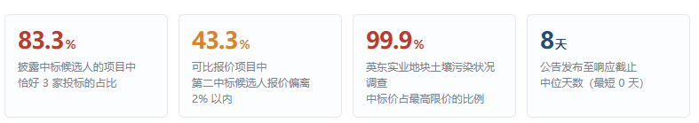
本次 89 条项目记录中没有发现可以直接认定为串通投标的完整证据链，但发现了足以支撑进一步核查的结构性异常：
-
竞争形式合规、实质收缩，被精确压缩在法定下限。36 个披露中标候选人的项目中，30 个恰好 3 家投标（83.3%），1 个仅 2 家。3 家是《中华人民共和国招标投标法》规定的最低投标人数量，恰好合规已成为常态，而非自然竞争的结果。
-
报价呈高度接近的序列特征。30 个可比报价项目中，13 个（43.3%）第二中标候选人与第一中标候选人的报价偏离在 2% 以内，5 个在 1% 以内；英东实业公司地块土壤污染状况调查项目三家报价极差仅 1,975 元，报价变异系数 0.24%。
-
部分标段的价格竞争基本失效。23 个可比项目中，6 个中标价达到最高限价的 95% 以上，株洲钢铁厂、华安钢铁厂、英东实业三个土壤污染状况调查复测项目分别达到 99.91%、99.87%、99.72%，节约率均不足 0.3%；同时存在报价更低却落败的反向案例。
-
综合得分差距取代报价成为决定性因素。17 个披露综合得分的项目中，5 个中标供应商领先第三中标候选人 20 分以上，英东实业项目差距达 37.1 分，而同期报价差异不足 1%。株洲市 4 个土壤污染状况调查项目的综合得分差距达 21.1—37.1 分，而报价差异不足 1%——评分办法的设计比报价更能决定结果。
-
参与主体分层已经固化。77 家参与投标机构中，7 家参与投标 2 次以上且从未中标；广东国地规划科技股份有限公司参与投标 4 次、中标 0 次，深圳市新城市规划建筑设计股份有限公司与湖南核工业岩土工程勘察设计研究院有限公司各 3 次、均为 0 次；同场次数最高的机构组合重复出现 3 次。稳定中标方（长沙佳源 4 次参与投标 3 次中标、湖南省环境保护科学研究院体系）与稳定无中标记录方（广东国地、深圳新城市、核工业岩土院）并存，同场组合重复出现。
-
程序排他的成本极低。公告期中位 8 天、21.8% 的项目不超过 5 天，不需要任何歧视性条款就能实现定向采购。
对湖南万源土地房地产评估测绘有限公司的建议
作为入围机制复盘（不计入本版本统计样本）：在株洲国投集团框架协议的两个包件中，湖南万源报出包件 2 全场最高的下浮优惠率 60%（其余机构 20%—45%），综合得分 87.80 分，排名第五。这个结果本身就是一条重要信息：在技术评分主导的框架协议中，价格让利是无效投入。
表5-6 万源的四条策略调整
对湖南万源土地房地产评估测绘有限公司而言，这份报告的实用价值不在于判断他人是否串通投标，而在于看清哪些赛道已经固化、哪些赛道还有真实竞争——把有限的投标资源投向后者，是比降价更有效的策略。
湖南万源当前的问题不是报价不够低，而是资格不够硬、赛道选得不对。在近八成项目只有 3 家投标的市场里，进入那 3 个名额依靠的是资质与业绩，而不是折扣率。
六、政策执行效果分析
本章的观察立场与前五章不同。前五章以采购活动为对象，回答市场如何运行、主体如何分布、风险如何识别；本章以湖南万源土地房地产评估测绘有限公司的投标决策为落点，回答三个问题：
-
在现行政策环境下，万源可以使用哪些政策工具；
-
这些工具在本批项目中是否真的可用；
-
面对七家集团各不相同的准入规则，万源应当把有限的技术与商务力量投向哪里。
这一立场决定了本章的取舍。政策条款是否被引用，对采购人而言是一个合规指标，对万源而言则是一个成本指标——条款写了却未落到评审环节，万源准备声明函、承诺函、联合体协议所付出的时间就是沉没成本；政策门槛设在哪里，对采购人而言是适用范围，对万源而言则是能否进入的门票。
约束须先行声明：第一，本章不作因果推断。最早记录为 2023 年 2 月，而主要政策文件均在此之前施行，缺乏严格意义上的“政策实施前”基线，故仅作趋势描述与结构对比。第二，本批项目的采购人为国有企业集团，其采购活动不属于《中华人民共和国政府采购法》第二条所称政府采购，本章的评估定位是“政策参照执行”，而非“合规性审查”。
数据来源、字段映射与逐图表计算口径
表 6-1-1 原始台账字段映射与清洗判定规则
株洲国投集团资产评估服务机构封闭式框架协议第一阶段征集项目分包 1、包 2 两个包件，状态为「候选」，「中标单位名称」为空，公告披露的是按综合得分排序的入围名单，每包 10 家，共 20 家次入围、去重后 15 家机构。按框架协议第一阶段征集的规则，名单内全部候选机构取得的是框架协议下的入围资格，而非某一采购标的的成交资格；因此这些机构一律记为「入围」，不记为「中标」，不进入 41 个成交项目，不计入 47 次中标，也不进入 33 家中标主体。
表 6-1-2 框架协议两个包件的入围名单（共 20 家次）
注：名单取自「三个以上候选人详情」列，按公告评审结果名次排列；「第一中标候选人」仅为名单第 1 位，不代表该项目已成交。两包重复的 5 家机构各计 2 次入围，20 家次去重后为 15 家。
表 6-1-3 逐图表数据来源、筛选条件、计算方法与框架协议归属
| 图表 / 表格 | 直接使用的台账列 | 筛选条件与计算方法 | 样本量 | 框架协议是否计入 |
|---|---|---|---|---|
| 图 6-1（有采购预算） | 采购金额/预算、项目名称 | 服务类 76 个项目中取「采购金额/预算」非空且大于 0 者；按 5 个金额区间（50 万元以下、50 万—100 万元、100 万—200 万元、200 万—400 万元、400 万元以上）分组计数；占比以分组数除以 57 | 57 | 不计入（2 个包件无预算） |
| 图 6-2 表 6-4 |
采购信息、资质要求、候选信息、成交信息、采购全文 | 对 76 个服务类项目作全文关键词匹配；联合体三类按「明确不接受」优先的排他规则归类，合计恒为 76；其余要素可叠加；占比为命中数除以 76 | 76 | 计入（参与全文检索） |
| 图 6-3 | 中标单位名称、第一候选供应商名称、状态、首次公告日期 | 对 41 个有成交结论项目按 2025 年 6 月 1 日分四段；逐段对成交主体按法人拆分并去重得「中标主体」，主体与项目比＝去重主体数÷项目数 | 41 | 不计入（非成交项目） |
| 图 6-4 6.3.2 节 |
项目名称、细分条块、首次公告日期 | 项目名称含 12 个资源环境关键词之一即命中；按公告年份分组，占比为当年命中数除以当年服务类项目数 | 15 个命中分母 76 | 不计入（名称无相关关键词） |
| 图 6-5 表 6-6 | 网站名称、项目名称及公告程序性条款 | 76 个服务类项目按 7 家集团分组；按项目名称与全文条款归入入围库、征集池、平台注册、公开挂网四类准入方式；样本量为该集团服务类项目数 | 76 | 计入（2 个包件归入入围库） |
| 图 6-6 | 中标单位名称、第一候选供应商名称、状态 | 对 41 个成交项目取成交主体，按联合体拆为独立法人，逐法人计 1 次中标；按名称归一后去重统计主体数与次数分布 | 41 项目 / 47 次 / 33 家 | 不计入（记为入围，非中标） |
综上，本章对框架协议的处理为：入围名单上的全部候选机构记为「入围」，单列统计，不与中标类指标混合； 6.2.3 节、6.5 节的中标主体结构均不含框架协议，图 6-2、图 6-5 因统计口径为 76 个服务类项目全文检索与集团分组而包含这 2 个包件，但不涉及中标次数。
6.1 分析定位与观测口径
6.1.1 采购主体属性与政策适用边界
89 条项目记录分别来自七家国有企业集团的自建采购平台：长沙城市发展集团有限公司、湖南湘江新区发展集团有限公司、长沙市雨花国有资产经营集团有限公司、株洲市城市建设发展集团有限公司、株洲市产业发展投资控股集团有限公司、湖南麓谷发展集团、湖南兴湘投资控股集团有限公司。剔除 13 个标的为招标代理服务的项目后，服务类项目 76 个，标的全部为土地房地产评估、测绘、多测合一、用地报批、社会稳定风险评估、土壤污染状况调查等专业技术服务。
《中华人民共和国政府采购法》第二条规定，政府采购是指各级国家机关、事业单位和团体组织，使用财政性资金采购依法制定的集中采购目录以内的或者采购限额标准以上的货物、工程和服务的行为。上述七家集团的采购人不属国家机关、事业单位或团体组织，采购活动通过企业自建平台实施，因此《政府采购促进中小企业发展管理办法》（财库〔2020〕46 号）等文件对本批项目不构成强制约束。
但对万源具有实际意义的规范有三项，均为可直接援引或可据以主张权利的条款。
-
《中华人民共和国中小企业促进法》（2017 年修订，2018 年 1 月 1 日施行）：第四十条第三款规定，政府采购不得在企业股权结构、经营年限、经营规模和财务指标等方面对中小企业实行差别待遇或者歧视待遇；第五十三条规定，国家机关、事业单位和大型企业不得违约拖欠中小企业的货物、工程、服务款项。前者是万源遭遇不合理资格条件时的抗辩依据，后者是万源主张付款权利的请求权基础。
-
《保障中小企业款项支付条例》：2020 年 7 月 5 日国务院令第 728 号公布，2025 年 3 月 17 日国务院令第 802 号修订，2025 年 6 月 1 日施行。第二条规定机关、事业单位和大型企业采购货物、工程、服务支付中小企业款项适用本条例；第九条第二款规定大型企业自交付之日起 60 日内支付；第十九条要求大型企业将保障中小企业款项支付情况纳入风险控制与合规管理体系。该条例直接适用于七家集团，是万源在合同谈判阶段最有力的抓手。
-
《湖南省财政厅关于政府采购促进中小企业发展有关措施的通知》（湘财购〔2022〕17 号）：2022 年 6 月 1 日起施行。该文件第一条确立“凭《湖南省政府采购供应商资格承诺函》参与采购活动，无需提供财务状况、缴纳税收和社会保障资金等资格证明材料”，并明确“采购人、代理机构不得将所有制形式、组织形式、注册地、本地分公司作为供应商的资格条件和评分项”。本批项目中有 7 个公告直接引用该文件并要求提交承诺函，说明省级政策已渗入国有企业采购文本。
6.1.2 政策清单与适用关系
本章涉及的政策文件、援引条款与适用关系见表 6-1。适用关系分四类：直接适用（法律、行政法规对大型企业采购的强制性规定，万源可直接主张）、参照适用（政府采购政策文件，对国有企业不构成强制约束但已成为采购文本的模板来源）、需求驱动（非采购政策，但通过法定义务派生采购需求）、判定依据（用于划型或认定的技术标准）。
表 6-1 政策文件、援引条款与适用关系
| 政策文件（官方全名） | 文号／发布机关 | 施行时间 | 本章援引条款 | 适用关系 |
|---|---|---|---|---|
| 中华人民共和国中小企业促进法 | 全国人民代表大会常务委员会修订 | 2018-01-01 | 第四十条、第五十三条 | 直接适用 |
| 保障中小企业款项支付条例 | 国务院令第 728 号公布、第 802 号修订 | 2025-06-01 | 第二条、第九条、第十九条 | 直接适用 |
| 政府采购促进中小企业发展管理办法 | 财库〔2020〕46 号 | 2021-01-01 | 第七条、第八条、第九条 | 参照 |
| 关于进一步加大政府采购支持中小企业力度的通知 | 财库〔2022〕19 号 | 2022-05-30 | 第二条、第三条 | 参照 |
| 湖南省财政厅关于政府采购促进中小企业发展有关措施的通知 | 湘财购〔2022〕17 号 | 2022-06-01 | 第一条、第二条 | 参照 |
| 政府采购领域“整顿市场秩序、建设法规体系、促进产业发展”三年行动方案（2024—2026 年） | 国办发〔2024〕33 号 | 2024-07 | 第三部分（二）（三） |
参照 |
| 关于调整优化节能产品、环境标志产品政府采购执行机制的通知 | 财库〔2019〕9 号 | 2019-04-01 | 第一条、第二条、第五条 | 参照·货物 |
| 关于政府采购支持绿色建材促进建筑品质提升试点工作的通知 | 财库〔2020〕31 号 | 2020-10 | 第二部分 | 参照·工程 |
| 关于扩大政府采购支持绿色建材促进建筑品质提升政策实施范围的通知 | 财库〔2022〕35 号 | 2022-11 | 第一部分、第二部分 | 参照·工程 |
| 中华人民共和国土壤污染防治法 | 全国人民代表大会常务委员会通过 | 2019-01-01 | 第五十九条第二款 | 需求驱动 |
| 中小企业划型标准规定 | 工信部联企业〔2011〕300 号 | 2011-06-18 | 第四条“其他未列明行业” | 判定依据 |
注：适用关系中的“参照”指该文件以政府采购为规范对象，对国有企业采购不构成强制约束，但其条款已成为采购文本的常见模板。
6.1.3 分析基准与样本构成
本章所有比例的分母随分析对象变化，避免出现“以 89 条为分母计算服务质量指标”的口径错误。表 6-2 列出六个分析总体及其形成规则，后文所有数值均注明所属总体。
表 6-2 分析基准与样本构成
| 分析总体 | 项目数 | 形成规则 | 本章用途 |
|---|---|---|---|
| 总记录 | 89 | 一个项目（标段、包件）计一条 | 总体规模描述 |
| 代理类项目 | 13 | 项目名称含招标代理、招选代理、代理服务、采购代理 | 剔除，标的为代理服务 |
| 服务类项目 | 76 | 89 减 13 | 所有比例的分母 |
| 有采购预算 | 57 | 采购金额字段非空 | 金额结构、政策门槛测算 |
| 有成交结论 | 41 | 实际成交 27 个 + 推定成交 14 个（有候选信息） | 中标类指标 |
| 框架协议入围 | 2 | 株洲产投两个包件，各 10 家入围，非单一成交 | 单列，不计本章入中标次数 |
注：推定成交指状态为“候选”、尚未发布成交公告，按第一中标候选人推定为成交供应商的记录；其成交金额不作为金额类指标使用。
6.1.4 万源在样本中的位置
在 76 个服务类项目中，万源出现在两个项目的竞争名单内，参与率 2.6%。两个项目的竞争结果恰好构成一组对照：一个进了库但未占先，一个进了候选但报价失据。
表 6-3 万源参与记录与竞争结果
| 项目名称 | 采购人所属集团 | 时点 | 万源所处位置 | 万源报价 | 结果 |
|---|---|---|---|---|---|
| 株洲国投集团资产评估服务机构封闭式框架协议第一阶段征集项目 包 2 | 株洲市产业发展投资控股集团 | 2024-01-05 | 第 5 名（10 家入围，第 1 名 94.80 分） | 下浮优惠率 60%（全场最深，区间 20%—60%） | 入围，未取得第一顺位 |
| 雨花国资 2024 年资产评估服务 | 长沙雨花国有资产经营集团 | 2024-12-16 | 第 3 中标候选人（预算 36.42 万元） | 254,936 元，高于成交价 27.5% | 未成交，成交价 200,000 元，得分差 7.21 分 |
注：报价与得分数值取自公告原文；框架协议包 2 的报价口径为下浮优惠率，与金额型项目不可直接比较。
两个案例指向同一结论：万源在资格与响应层面没有障碍，两次都进入了评审视野；失分点在评分结构而非准入条件。株洲项目中万源让价最深却位列第 5，说明该集团评审中价格权重有限、技术与业绩分占主导；雨花项目中万源报价高出成交价 27.5%、得分低 7.21 分，说明在综合评估法下单纯让价与单纯报价均不足以取胜，报价必须落在竞争对手的分布区间内。这一判断构成后文所有建议的事实基础。
6.2 支持中小企业政策的执行效果
6.2.1 政策门槛的覆盖：适用空间全额存在
财库〔2020〕46 号第七条规定，采购限额标准以上、200 万元以下的货物和服务采购项目，适宜由中小企业提供的，采购人应当专门面向中小企业采购；第八条规定超过 200 万元的货物和服务项目，应预留该部分预算总额的 30% 以上专门面向中小企业，其中小微企业不低于 60%。湘财购〔2022〕17 号进一步将湖南省的预留比例由 30% 提高至 40%。上述条款的共同前提是项目金额落入门槛区间。
本批项目的金额结构使这一前提全额成立。57 个载有预算的服务类项目，最低 2.5 万元，最高 195.0 万元，无一超过 200 万元（图 6-1）：50 万元以下 42 个，占 73.7%；50 万元至 100 万元 11 个，占 19.3%；100 万元至 200 万元 4 个，占 7.0%；200 万元至 400 万元与 400 万元及以上两个区间均为 0 个。
**图 6-1 服务类项目采购金额分档与中小企业预留份额适用空间（n=57） **

数据来源：「采购金额/预算」列；对 76 个服务类项目中 57 个预算非空项目按 5 个金额区间分组计数，框架协议 2 个包件无预算、不计入。
不存在“项目太大、政策不适用”的豁免理由。76 个服务类项目中没有任何一个可以正当地以“金额未达门槛”为由排除政策适用。采购人不设这些条款，也不存在金额上的正当性。
同时需要指出，金额小并不等于门槛低。这 57 个项目的单项预算中位数落在 50 万元以下区间，而土地房地产评估、多测合一、土壤污染状况调查等标的普遍要求专项资质与同类业绩。金额与门槛的错配，正是后文讨论的“小项目、高门槛”现象的成因。
6.2.2 政策条款的载明：工具齐备而未被启用
对 76 个服务类项目的采购公告、资质要求、评审办法与公告正文作全文检索，八项政策要素的载明情况见图 6-2。结果呈现明显的两极：联合体条款普遍载明，中小企业专属工具几乎为零。
图 6-2 采购文件中中小企业政策条款的载明情况（n=76）

数据来源：「采购信息、资质要求、候选信息、成交信息、采购全文」5 列全文检索；对 76 个服务类项目逐项关键词匹配，联合体三类为排他分类，含框架协议 2 个项目。
表 6-4 中小企业政策要素的载明情况
| 政策要素 | 载明项目数 | 占 76 个服务类项目 | 条款形态与代表项目 |
|---|---|---|---|
| 专门面向中小企业采购（预留份额） | 0 | 0.0% | 无任何项目设置预留或专门面向条款 |
| 价格扣除 / 评审优惠 | 0 | 0.0% | 无任何项目在评审办法中设置价格扣除或加分 |
| 中小企业声明函 | 0 | 0.0% | 无任何项目要求提交声明函 |
| 明确标注非专门面向中小企业 | 6 | 7.9% | 雨花国资 6 个项目在资格要求中勾选“非专门面向中小企业采购项目”，标的所属行业填“其他未列明行业” |
| 湖南省供应商资格承诺函 | 7 | 9.2% | 雨花国资金融 7 个项目引用湘财购〔2022〕17 号，凭承诺函替代财务状况、纳税与社保材料 |
| 明确接受联合体投标 | 7 | 9.2% | 城发、雨花 7 个用地预审与规划选址类项目允许联合体，成员不超过 2 家 |
| 明确不接受联合体投标 | 45 | 59.2% | 覆盖七家集团中的六家，含全部社会稳定风险评估与土壤污染状况调查项目 |
| 未载明联合体条款 | 24 | 31.6% | 公告未就联合体作任何表述 |
注：联合体三类为排他分类，合计 76 个；其余要素可叠加。检索范围为采购信息、资质要求、候选信息、成交信息与采购全文字段。
-
预留份额为零，是采购人主动选择的结果——6 个项目明确勾选“非专门面向中小企业”，其余 70 个不作表述，说明在国有企业采购中，预留份额尚未成为默认动作。
-
价格扣除为零，是评审办法的结构性缺失——76 个项目的评审办法中，没有任何一个设置价格扣除条款，即便在采用综合评估法的项目中，价格分的计算基准也是报价绝对值而非扣除后价格。
-
声明函为零，则与承诺函的替代有关：湘财购〔2022〕17 号确立的承诺函制度，在功能上覆盖了声明函，采购人因此不再单独要求声明函。
-
联合体条款的分布则提供了另一种可能。45 个项目明确不接受联合体，占比 59.2%，覆盖社会稳定风险评估、土壤污染状况调查等技术复合度较高的标的；7 个项目明确接受，集中在用地预审与规划选址论证，且限定成员不超过 2 家、牵头人须具备城乡规划编制乙级及以上资质。
【结论与观点】：
-
对万源最直接的影响：既然价格扣除不存在，以“中小企业身份”换取价格优势这条路在本批项目中走不通。万源若把投标策略建立在政策红利上，将一无所获；真正决定胜负的仍是资质、业绩与报价区间。
-
操作建议：联合体不是通用工具，而是特定标的的专用工具。万源在测绘与土地评估上有资质积累，在城乡规划编制上没有，若要进入用地预审类项目，联合体是唯一路径，且必须与具备规划资质的机构绑定。
6.2.3 中标主体的分散结构：75.8% 只中标一次
41 个有成交结论的项目涉及 33 家中标主体，累计 47 次中标（联合体按法人分别计数，5 个项目为多成员联合体）。其中中标 1 次的 25 家，占 75.8%；中标 2 次的 4 家，中标 3 次的 2 家，中标 4 次的 2 家（图 6-3）。前 5 名主体合计中标 16 次，占 34.0%。
「47 次中标」不是 47 个项目，而是 41 个有成交结论项目按成交主体拆分后的法人次数：
第一步 确定成交项目：服务类 76 个项目中，取「中标单位名称」非空的 27 个项目为实际成交，取状态为「候选」且「第一候选供应商名称」非空的 14 个项目为推定成交，合计 41 个有成交结论项目；框架协议 2 个包件因结果为入围名单而非单一成交，单列排除。
· 第二步 拆分联合体：36 个项目为单一成交主体，5 个项目为多成员联合体。对多成员项目，将「中标单位名称」按联合体成员拆为独立法人，每个法人各计 1 次中标；共额外拆出 6 个法人次。
· 第三步 汇总与去重：中标次数 ＝ 项目数 41 ＋ 联合体额外法人次 6 ＝ 47 次；按名称归一（去除「有限公司」「有限责任公司」后缀与空白）去重后为 33 家中标主体。
· 第四步 次数分布校验：将 47 次按主体归集，得到中标 1 次 25 家、2 次 4 家、3 次 2 家、4 次 2 家；25×1＋4×2＋2×3＋2×4 ＝ 47 次，与第三步结果闭合。
表 6-4-2 5 个多成员联合体项目的法人拆分明细
| 联合体项目（多成员成交） | 成员法人数 | 拆分后的独立法人 |
|---|---|---|
| 时光路（天心湖路-健悦路）等6个项目用地预审与规划选址论证等技术服务集中采购 | 2 | 湖南山和勘测设计有限公司；长沙永信土地房地产评估测绘有限公司 |
| 长沙市雨花区跳马镇全域土地综合整治技术服务项目 | 2 | 长沙市勘测设计研究院；长沙永信土地房地产评估测绘有限公司 |
| 天华寄宿制学校民转公土地和资产评估服务 | 3 | 长沙永信土地房地产评估测绘有限公司；湖南新星房地产土地评估咨询有限公司；湖南思远四达房地产评估咨询有限公司 |
| 株洲钢铁厂地块土壤污染状况调查（复测）项目 | 2 | 湖南省环境保护科学研究院；湖南省地质工程勘察院有限公司 |
| 华安钢铁厂地块土壤污染状况调查（复测）项目 | 2 | 湖南省环境保护科学研究院；湖南省地质工程勘察院有限公司 |
注：5 个项目中 4 个各拆为 2 家、1 个拆为 3 家，合计 11 个法人次，较按项目计 1 次多出 6 次，即 41＋6＝47。
图 6-3 中标主体中标次数分布（n=33，联合体成员按法人分别计数）

数据来源：「中标单位名称、第一候选供应商名称、状态」列；41 个成交项目的成交主体按联合体拆为独立法人，逐法人计 1 次、合计 47 次，去重 33 家主体；框架协议不计入。
-
分散结构：
-
中标 4 次的湖南山和勘测设计有限公司与长沙永信土地房地产评估测绘有限公司，构成万源最直接的对标对象。两家机构的共同点是在多个集团同时中标，且均在联合体项目中出现——湖南山和参与 1 个联合体项目，长沙永信参与 3 个（其中 1 个为三方联合体）。
-
重复中标并非依赖单一客户关系，而是依靠跨集团、跨标的的资质覆盖。
-
-
低集中度：
-
33 家主体分享 41 个项目，平均每家 1.42 次，前 5 名集中度 34.0%。
-
机会在于没有大量形成垄断，新增进入者仍可获得份额。
-
警示在于分散意味着单项目的边际收益低，若不能在多个集团同时建立准入资格，中标将高度依赖偶然性——万源自身的 0 次中标、2 次参与，正是这一机制的结果。
-
【结论与建议】
-
政策工具可用性：本批项目 100% 落在中小企业预留份额的金额门槛内，但预留份额、价格扣除、声明函三项工具的载明率均为 0，政策空间存在而工具未启用。万源不能把投标策略建立在政策红利上。
-
联合体的真实边界：76 个项目中有 45 个（59.2%）明确不接受联合体，7 个明确接受。联合体只在用地预审与规划选址类项目上可用，且须与具备城乡规划编制乙级及以上资质的机构组合。
-
万源的实际短板：万源两次进入评审视野均未成交，失分点在评分结构。株洲框架协议中让价最深（60%）仍列第 5，说明该集团以技术与业绩分主导；雨花项目中报价高出成交价 27.5%、得分低 7.21 分，说明报价须落在竞争者分布区间内而非越低越好。
-
操作建议：第一，把《湖南省政府采购供应商资格承诺函》固化为投标文件的常备件，7 个引用湘财购〔2022〕17 号的项目可直接使用，无需临时准备财务与社保材料；第二，在报价环节建立“历史成交价—预算—竞争者报价”三线比对机制，避免再次出现高出成交价 27.5% 的情形；第三，联合体资源按标的类型定向储备，优先锁定具备城乡规划编制乙级及以上资质的机构，用于用地预审与规划选址类项目。
6.3 绿色采购政策的执行效果
6.3.1 制度空白：五项要素全部零命中
绿色采购的政策工具分两类：一类是产品清单管理，即财库〔2019〕9 号确立的节能产品、环境标志产品政府优先采购与强制采购机制；另一类是工程材料管理，即财库〔2020〕31 号、财库〔2022〕35 号确立的绿色建材应用比例要求。两类工具的共同点是以货物或工程材料为作用对象。
对 76 个服务类项目作关键词检索，五项绿色要素的命中数全部为零（表 6-5）。检索中出现“环保”字样的记录，经逐条核对，全部来自企业名称（如长沙麓谷智慧环保运营管理有限公司）或项目名称中的“环境保护”表述，不构成政策要素。
表 6-5 绿色采购要素的检索结果
| 绿色采购要素 | 政策依据 | 命中项目数 | 检索结果说明 |
|---|---|---|---|
| 节能产品、节能审查 | 财库〔2019〕9 号 | 0 | 无项目要求节能产品认证或节能审查 |
| 环境标志产品 | 财库〔2019〕9 号 | 0 | 无项目要求环境标志产品认证 |
| 绿色建材 | 财库〔2020〕31 号、财库〔2022〕35 号 | 0 | 无项目涉及绿色建材应用比例 |
| 碳足迹、碳排放核算 | 国办发〔2024〕33 号 | 0 | 无项目要求碳排放相关成果 |
| 绿色采购、绿色供应 | 国办发〔2024〕33 号 | 0 | 无项目在评审办法中设置绿色指标 |
注：检索范围为采购信息、资质要求、评审办法与采购全文字段；“环保”字样的 7 条命中经核对均为企业或项目名称，未计入。
这一空白并非执行不力，而是工具与标的错配。本批项目的标的全部是智力服务，交付物为报告、数据与图纸，既不采购设备，也不使用建材，自然不进入两张清单的适用范围。换言之，即便采购人严格执行财库〔2019〕9 号与财库〔2022〕35 号，本批项目也不会出现绿色条款。评估绿色采购在本批项目中的执行效果，前提是先承认现行工具的作用范围不及于此。
6.3.2 需求真实存在：资源环境类项目占 19.7%
与制度空白形成对照的是需求侧的真实性。按项目名称与细分条块归并，76 个服务类项目中属于资源环境类的 15 个，占 19.7%，其中土壤污染状况调查 8 个。年度分布为 2023 年 5 个、2024 年 4 个、2025 年 6 个，占当年项目的比例分别为 25.0%、17.4%、18.2%（图 6-4）。
图 6-4 资源环境类技术服务项目的年度变化（n=76）

数据来源：「项目名称、细分条块、首次公告日期」列；按 12 个资源环境关键词筛出 15 个项目，按公告年份分组并计算占当年项目比例，框架协议项目名称不含相关关键词、不计入。
这一需求的来源是法定义务而非政策激励。《中华人民共和国土壤污染防治法》第五十九条第二款规定，用途变更为住宅、公共管理与公共服务用地的，变更前应当按照规定进行土壤污染状况调查。株洲市城市建设发展集团连续开展的英东实业公司地块、株洲钢铁厂地块、华安钢铁厂地块土壤污染状况调查，长沙城市发展集团的牛角塘安置房地块调查，均属此类。需求由土地用途变更触发，与采购政策无关，因而具有刚性。
含义：
-
市场判断：绿色因素在本批项目中以“合规成本”形态存在，而非“政策激励”形态。采购人不为绿色付费，但会为合规付费——土壤污染状况调查的采购需求由法律强制产生，价格弹性低，是相对稳定的业务来源。
-
能力判断：现行政策工具不适用于服务类项目，但国办发〔2024〕33 号已提出“制定面向绿色产品的政府采购支持政策”，若未来将绿色咨询纳入评审指标，具备节约集约用地分析、碳排放核算能力的机构将获得先发优势。这一窗口尚未打开，但方向明确。
【结论与建议】
-
客观现状：节能、环境标志、绿色建材、碳足迹、绿色供应五项要素在 76 个服务类项目中命中数均为 0，绿色采购政策在本批项目中处于制度空白状态，且空白源于工具与标的错配而非执行不力。
-
需求特征：资源环境类项目 15 个，占 19.7%，其中土壤污染状况调查 8 个，需求源自《土壤污染防治法》第五十九条第二款的法定义务，年度分布无单向趋势但基数稳定。
-
操作建议：第一，把土壤污染状况调查作为稳定业务线经营，该类项目由土地用途变更触发、采购时点可预判，宜按片区建立项目储备清单；第二，在服务方案中前置植入节约集约用地分析、绿色低碳评价等内容，作为技术分的差异化项，成本可控而区分度明确；第三，跟踪国办发〔2024〕33 号后续配套文件，一旦绿色咨询纳入评审指标，可立即形成可投标的服务产品。
6.4 供应商入库与入围机制的演变
6.4.1 七家集团的准入机制分化
四类机制：区别只在“投标前要不要先过一道关”
七家集团对供应商的管理方式并不统一，可归为四类：入围库、征集池、平台注册、公开挂网。分类依据是公告文本中的程序性条款，而非集团规模或行业属性（图 6-5、表 6-6）。
**图 6-5 各集团供应商准入方式与样本量（n=76） **数据来源：各集团采购公告程序性条款

各集团供应商准入方式与样本量（n=76） 数据来源：「网站名称、项目名称」列及公告程序性条款；76 个服务类项目按 7 家集团分组并归入四类准入方式，含框架协议 2 个项目。
表 6-6-1 判别机制
表 6-6 七家集团的供应商准入机制
| 集团 | 服务类项目 | 准入方式 | 门槛类型 | 程序要点 |
|---|---|---|---|---|
| 长沙城市发展集团 | 19 | 公开竞价 / 公开招选 |
平台注册 | 应选人在投标前须在长沙城发集团招采交易平台注册成功，然后报名项目并下载领取招选文件。项目开标时，参与应选的供应商如未注册成功或未下载领取招选文件，本次应选文件作废，六个月内禁止参与城发集团内部公开招选项目应选 |
| 湖南湘江新区发展集团 | 16 | 征集—资格审查—随机抽取 | 征集池 | 合格供应商超 20 家抽 3—5 家进入下一阶段，20 家以内抽 3 家；无正当理由放弃投标列入黑名单 |
| 长沙雨花国有资产经营集团 | 14 | 竞争性比选 | 公开挂网 | 公开挂网比选，按比选文件确定中选人，未设固定入库环节 |
| 株洲市城市建设发展集团 | 10 | 采购公告（公开挂网） | 公开挂网 | 按项目单独组织，未设固定入库环节 |
| 株洲市产业发展投资控股集团 | 6 | 封闭式框架协议 | 入围库 | 2023 年 12 月两个包各 10 家入围，服务期 2 年，期内项目在库内选取 |
| 湖南麓谷发展集团 | 6 | 公开招标 / 比选 | 公开挂网 | 按项目公开组织，未设固定入库环节 |
| 湖南兴湘投资控股集团 | 5 | 中介机构集中采购（分标段） | 入围库 | 2025 年 10 月启动三个标段集中采购，按标段确定服务机构 |
注：长沙城市发展集团的“平台注册”不设名额限制，注册后即可参与竞价，与株洲产投、湖南兴湘的名额制入围性质不同。
四类机制对万源的成本结构影响截然不同，把这四类按“入场门槛”从低到高排：
-
第一类：平台注册后直接竞价（长沙城市发展集团）
-
没有资格预审，也没有入围名单。门槛是手续性的：要在集团招采交易平台注册成为供应商，看到竞价公告后下载竞价文件、按文件报价。没注册、或者注册了但没下载竞价文件，报价直接作废，还会被禁入 6 个月。
-
进入成本集中在一次性注册与平台操作，注册后项目获取转为常规动作。对投标人来说，这是最轻的一类：注册一次，通道长期有效，之后每个项目都是一次独立的报价竞争，输赢只取决于当次报价和文件质量。它的隐含要求是平台操作要熟练、时间节点不能错过（下载文件本身就算一个动作）。
-

-
第二类：征集池——先入库，再抽签（湖南湘江新区发展集团）
-
成本在资格审查环节，且存在随机性——即便通过审查，也可能在抽取环节被排除。要过两道关。第一道是把材料报上去做资格审查，通过后进入“合格供应商池”；第二道是项目来了以后不公开招所有人，而是从池子里随机抽——合格供应商超过 20 家时抽 3—5 家进入下一阶段，20 家以内抽 3 家。
-
投标人真实的处境是：进了池子不等于有项目。池子可能几十家，一年抽不到你也是常态；而且被抽中后放弃投标，无正当理由会被列入黑名单，等于把“不想投”这个选项也堵掉了。反过来说，一旦被抽中，竞争对手只有 3—5 家，比公开挂网的项目好打得多。所以这一类拼的是“入池资格 + 被抽中的运气 + 抽中后的响应速度”。
-

-
第三类：入围库——一次入围，长期在里面接活（株洲市产业发展投资控股集团、湖南兴湘投资控股集团）
-
成本较高，需要在集中采购阶段投入完整的商务与技术资源，但一旦入围，两年内的项目获取成本显著下降。
-
这一类是把竞争提前到“入围”那一次。株洲市产业发展投资控股集团 2023 年 12 月一次性招了两个包、每包 10 家，服务期 2 年，期内项目直接在库内选取，不再逐个公开竞争。湖南兴湘投资控股集团 2025 年 10 月启动三个标段的集中采购，逻辑相同。
-
对投标人，这是“一次性押注”：入围了，两年内有一批项目可以接；没入围，这两年这个集团的门就是关着的——不是难，是根本没有报名入口。所以这一类最关键的不是某次报价，而是窗口期：建库公告发布的那几周。错过就等下一轮，通常两三年一次。
-

-
第四类：公开挂网、按项目竞争（长沙雨花国有资产经营集团 、株洲市城市建设发展集团 、湖南麓谷发展集团 ）
-
没有前置关卡，也没有库。每个项目单独发公告、单独报名、单独评审，谁都能来。
-
这一类数量最多、机会最密，但同时竞争最充分——没有筛选机制，来多少家算多少家。对投标人意味着每一次都要重新准备一套文件，边际成本高，靠的是单次文件质量和报价策略，没有“资格红利”可吃。
-
一句话概括：四类的差别只在“报名之前有没有一道关”，过了关之后都还是要投标、还是要评分。第一类关在平台操作，第二类关在资格审查加随机，第三类关在入围评审，第四类没有关。
这一分化解释了万源参与率仅 2.6% 的结构性原因。万源参与的两个项目分属入围库与公开挂网两类，恰是进入门槛最清楚的两类；而项目数量最多的平台注册类（19 个）与征集池类（16 个），合计 35 个项目，占总量的 46.1%，均未见万源的参与记录。
机制不是固定的，但要分三层看
-
集团层面的主机制，一年内基本不变。它由集团的采购制度决定，不会这个月入围制、下个月公开挂网。所以你在某一年摸清一套，当年可以照着用。
-
库是有期限的，到期就要重来。这是最容易被忽略的一点。株洲市产业发展投资控股集团 2023 年 12 月建的库、服务期 2 年，到 2025 年底就到期，届时必须重新征集——重新征集就是重新洗牌，也是新进入者唯一的机会窗口。湖南兴湘投资控股集团 2025 年 10 月才启动集中采购，说明它此前是按项目组织的，现在转向了入围制。这类“从无库到有库”的变化，对没进过场的机构是利好，对老供应商是风险。
-
门槛在持续抬高，同一集团的不同轮次也在调。这是过去两年最明显的趋势，可以直接对照：
| 维度 | 株洲市产业发展投资控股集团（2023 年 12 月） | 湖南兴湘投资控股集团（2025 年 10 月） |
|---|---|---|
| 存续年限 | 3 年 | 注册满 4 年 |
| 资质 | 未设三项并列 | 资产评估备案、二级房地产估价、土地估价备案三项并列 |
| 团队 | 无人数下限 | 三类执业资格各 1 人、合计 6 人 |
| 业绩 | 无金额门槛 | 10 亿元以上国有企业评估业绩 |
| 收费上限 | 5.5 折 / 4.26 折 | 3 折 / 3.4 折 |
湖南湘江新区发展集团的抽取规则同期也在收紧：2023 年是“超过 20 家抽 5 家、20 家以内抽 3 家”，2025 年改成“不少于 3 家、具体数量由采购人在采购文件中明确”，同时新增“补抽只进行一次”“无正当理由弃标列入黑名单”。规则措辞从“定数”变成“由采购人定”，意味着不确定性上升，投标人无法预先判断这一标会有几家竞争。
上面那张表是“该样本里的主要方式”，不是“该集团唯一方式”。一个集团内部可以并存多种机制——长沙城市发展集团以公开竞价为主，但同样有招选、比选；湖南兴湘投资控股集团既有集中采购，也有按项目的比选。所以更准确的说法是“这个集团的某个采购品类，用的是哪种方式”，而不是“这个集团就是哪一类”。
对湖南万源土地房地产评估测绘有限公司的实际含义
-
标题带“框架协议 / 入围 / 建库”的——窗口期极短，错过等两三年；
-
标题带“集中采购 / 征集”但你不确定类型的——必须打开正文搜“服务期/入围数量/抽取”三个词，确认是不是资格类。
按“投入产出比”排序：
-
长沙城市发展集团——只需注册一次平台账号，是唯一“一次投入、长期打开”的通道，且项目量最大。这是当前最低成本的一步。
-
湖南湘江新区发展集团——先争取进入合格供应商池。池外的机构连被抽中的资格都没有，而入池是资格审，不是价格竞争，对你们这类有资质、有业绩的机构相对有利。
-
湖南兴湘投资控股集团（5 个项目，2025 年 10 月新开三个标段）——这是正在打开的窗口，也是唯一一个“新进入者与老供应商同起跑线”的机会，但门槛最高（三项资质并列、6 人执业资格、10 亿元业绩），要判断的是能不能达到，而不是值不值得投。
-
株洲市产业发展投资控股集团——你们已在包 2 中排名第 5（10 家入围），库是有效的，但库期 2 年即将到期，重点是盯住下一轮重新征集的公告，那一轮是重新排位的机会。
-
长沙雨花国有资产经营集团、株洲市城市建设发展集团、湖南麓谷发展集团——公开挂网、无门槛，靠单个项目的文件质量，属于“有精力就投”的补充盘。
6.4.2 入围门槛的前后变化
两个名额制集团的文件相隔近两年，构成了可直接对照的样本：株洲产投的框架协议征集公告发布于 2023 年 12 月 14 日，湖南兴湘的中介机构集中采购招标公告发布于 2025 年 10 月 31 日。对照结果是门槛整体上移、费率整体下压（表 6-7）。
表 6-7 两个名额制集团入围门槛对照
| 门槛维度 | 株洲产投（2023-12-14） | 湖南兴湘（2025-10-31） | 变化方向 |
|---|---|---|---|
| 组织形式 | 封闭式框架协议，两个包各 10 家，服务期 2 年 | 中介机构集中采购，分三个标段分别确定 | 由包件制转为标段制 |
| 存续年限 | 连续存续 3 年以上 | 注册满 4 年（以执业证书时间为准） | 延长 1 年 |
| 资质要求 | 未设三项资质并列要求 | 资产评估备案、二级及以上房地产评估、土地估价备案三项并列 | 由单一资质转为三项并列 |
| 团队要求 | 未设人数下限，要求执业人员无利害关系 | 注册资产评估师、房地产估价师、土地估价师各不少于 1 人，合计不少于 6 人 | 首次设人数下限 |
| 业绩要求 | 未设金额门槛 | 近三年 10 亿元以上国企资产评估业绩；标段 3 另需 5000 万元以上项目业绩 | 首次设金额门槛 |
| 收费上限 | 包 1 按湘价服〔2011〕203 号 4.26 折；包 2 按 5.5 折 | 标段 1 为 3.4 折、标段 3 为 3 折；标段 2 房产 2 元/平方米、土地 300 元/亩 | 费率下调约 1.3—2.5 折 |
| 特殊资格 | 无 | 标段 3 需证券监管部门备案的证券期货业务评估资格 | 新增专项资格 |
| 约束机制 | 设中介机构负面清单与黑名单 | 未在公告中单列，沿用集团制度 | 维持 |
注：数据取自两份公告原文；折数为收费标准的折扣率，数字越小表示让价幅度越大。
三项变化对万源构成直接约束：
-
存续年限与团队人数的要求，把“小而专”的机构排除在外——6 名执业人员的下限，意味着机构必须具备跨专业的人员储备，单靠一两名估价师无法满足。
-
10 亿元以上业绩门槛，实质上把客户限定在承接过大额国企业务的机构。
-
费率下调 1.3 至 2.5 折，压缩的是履约利润空间，而以人力成本为主的评估业务，费率下调直接对应毛利下降。
同一时期，湘江集团的抽取规则也在收紧（表 6-8）。2023 年的表述是“＞20 家抽 5 家、≤20 家抽 3 家”，2025 年改为“＞20 家抽不少于 5 家、≤20 家抽不少于 3 家，进入下一阶段的数量由采购人在采购文件中明确”，并新增“无正当理由放弃投标列入黑名单”“补抽仅允许一次”两项约束。表面看抽取数量增加了弹性，实质是把决定权收归采购人，同时提高了弃标的机会成本。
表 6-8 湘江集团征集抽取规则的演变
| 时点 | 抽取规则表述 | 弃标与补抽约束 | 对参与者的影响 |
|---|---|---|---|
| 2023-02 至 2023-12 | ＞20 家抽 5 家；≤20 家抽 3 家 | 无正当理由放弃投标列入供应商黑名单 | 规则固定，可据此估算入围概率 |
| 2024-08 至 2024-11 | ＞20 家抽不少于 5 家；≤20 家抽不少于 3 家 | 补抽仅允许一次 | 抽取数量出现下限表述，上限不再固定 |
| 2025-03 至 2025-12 | ＞20 家抽不少于 5 家；≤20 家抽不少于 3 家，具体数量由采购人在采购文件中明确 | 补抽仅允许一次，弃标列入黑名单 | 数量弹性归采购人，投标决策须以采购文件为准 |
注：规则表述摘自各项目征集公告“抽取原则”条款；2025 年 4 月起部分项目改为“＞5 家抽 5 家、≤5 家全部进入”。
6.4.3 万源在库内的位置
株洲产投框架协议包 2 的入围名单，是万源唯一一次进入名额制竞争的完整记录。10 家入围机构的综合得分区间为 76.71 至 94.80 分，万源 87.80 分列第 5，与第 1 名相差 7.00 分；报价下浮率区间为 20% 至 60%，万源 60% 为全场最深，比第 1 名的 45% 高出 15 个百分点。
这组数据揭示的评分结构值得注意：万源以最深的让价换来第 5 名，说明价格在该集团评审中的权重有限，技术与业绩分构成了主要差距。若按 7 分的差距倒推，即便万源将让价再提高，也难以弥补技术分的缺口。这与 6.2.3 节对雨花项目的观察一致——两次失分都发生在非价格维度。
对照湖南兴湘 2025 年的门槛，万源的准备缺口集中在两处。一是团队人数：兴湘要求三类执业资格各不少于 1 人、合计不少于 6 人，这是硬性下限，无法通过临时借用满足；二是业绩金额：10 亿元以上国企资产评估业绩的要求，需要以合同与成交证明为凭。这两项均属中长期能力建设，无法在单个项目投标周期内补齐。
【结论与建议】
-
机制格局：七家集团形成四类准入机制：入围库 11 个项目、征集池 16 个、平台注册 19 个、公开挂网 30 个。名额制（入围库与征集池）合计 27 个项目，占 35.5%，但进入成本最高；公开挂网类进入成本最低。
-
变化方向：2023 年株洲产投到 2025 年湖南兴湘，门槛在四个维度同时上移：存续年限 3 年至 4 年、资质由单一转三项并列、团队首次设 6 人下限、业绩首次设 10 亿元金额门槛；收费上限由 5.5 折降至 3 折。湘江集团同期将抽取数量的决定权收归采购人。
-
万源位置：万源唯一一次进入名额制竞争列第 5 名，让价最深而未占先，失分在技术与业绩维度；对照 2025 年新门槛，缺口在团队人数与业绩金额两项硬指标。
-
操作建议：第一，优先完成长沙城发平台注册，以最低成本打开 19 个项目（占 25.0%）的参与通道，这是当前投入产出比最高的动作；第二，将株洲产投、湖南兴湘的入围准备作为年度专项，按 6 人执业资格配置与 10 亿元业绩证明两项硬指标倒排时间表；第三，对湘江集团的征集项目建立“资格审查—抽取”两阶段决策模型，在报名前评估合格供应商规模，避免在抽取环节无效投入。
6.5 政策节点前后中标主体结构变化
以《保障中小企业款项支付条例》修订施行的 2025 年 6 月 1 日为节点，将 41 个成交项目按首次公告日期分为四段，观察中标主体结构的变化（图 6-6、表 6-9）。
图 6-6 政策节点前后中标主体结构变化（n=41）

数据来源：「中标单位名称、第一候选供应商名称、状态、首次公告日期」列；对 41 个有成交结论项目按 2025 年 6 月 1 日节点分四段，逐段统计去重中标主体与联合体项目，框架协议不计入。
表 6-9 四个时段的中标主体结构
| 时段 | 成交项目 | 中标主体 | 主体与项目比 | 重复中标 | 联合体项目 | 省外主体 | 事业单位 |
|---|---|---|---|---|---|---|---|
| 2023 年 | 10 | 9 | 90.0% | 1 | 2 | 1 | 2 |
| 2024 年 | 14 | 14 | 100.0% | 0 | 1 | 2 | 0 |
| 2025 年 1—5 月 | 7 | 6 | 85.7% | 1 | 0 | 2 | 0 |
| 2025 年 6 月及以后 | 10 | 9 | 90.0% | 1 | 2 | 1 | 1 |
注：主体与项目比为中标主体数除以成交项目数，100% 表示无重复中标；省外主体按名称中不含湖南、长沙、株洲、湘潭、湘等字样判定。
四段数据不构成趋势。主体与项目比在 85.7% 至 100% 之间往复，重复中标在 0 至 1 之间波动，联合体项目在 0 至 2 之间起伏，省外主体在 1 至 2 家之间徘徊。没有任何一项指标呈现单向变化，也没有出现节点前后的断裂。
这一结果需要谨慎解读，避免两种误判。第一种误判是据此认为条例无效：条例规制的是付款环节——60 日付款期限、不得以内部程序延缓支付、预付款比例——而非成交环节，用中标结构检验它在方法上就不匹配。即便条例完全落实，中标主体结构也不会因此改变。第二种误判是据此认为政策无影响：真正的观察窗口在于合同履约阶段，而台账只记录到成交公告，没有付款记录，因此无法评估。
对万源有意义的结论只有一条：本批项目的中标结构在观察期内保持稳定，进入者与在位者的相对位置没有因政策变动而重排。这意味着万源面对的竞争格局是结构性的，而非周期性的——不会因为某一政策文件的出台而突然出现窗口，只能通过资质、业绩与准入资格的积累逐步改变位置。
【结论与建议】
-
结构特征：四个时段的主体与项目比在 85.7%—100% 之间，重复中标 0—1 家，联合体 0—2 个，省外主体 1—2 家，未观察到结构性冲击。
-
方法说明：《保障中小企业款项支付条例》规制付款环节而非成交环节，用中标结构检验其效果在方法上不成立；台账未收录付款记录，无法评估履约阶段的实际执行。
-
操作建议：不以政策节点作为投标节奏的依据，而以集团准入周期作为节奏依据——株洲产投的框架协议为两年一期，湖南兴湘的集中采购按标段启动，这两个时点才是万源需要提前准备的窗口。
6.6 总结
把本章各节的分析汇总，可以形成四点判断。
-
政策工具的适用空间与使用状况严重背离。57 个项目的金额全部落在 200 万元预留门槛之下，适用空间为 100%，但预留份额、价格扣除、声明函三项工具的载明率均为 0。空间存在，工具未启用，这是本批项目政策执行的基本面貌。
-
万源的问题不在准入而在评分。两次进入评审视野，两次未成交，一次让价最深列第 5，一次报价高出成交价 27.5%，失分均发生在技术与业绩维度。继续在价格上加大让幅，边际收益已经很低。
-
准入机制的分化程度高于预期。七家集团分属四类机制，名额制覆盖 27 个项目，公开挂网覆盖 30 个，平台注册覆盖 19 个。万源只触达了其中两类，占总量 46.1% 的平台注册与征集池两类尚无参与记录。
-
门槛在两年内系统性上移。从株洲产投到湖南兴湘，存续年限、资质数量、团队人数、业绩金额四项同时提高，收费上限从 5.5 折压到 3 折。这一趋势不会逆转，万源的能力建设须以此为准。
据此形成五项行动，按投入产出比排序（表 6-10）。
表 6-10 万源的政策应对行动清单
| 序号 | 行动 | 对应依据 | 投入 | 预期效果 |
|---|---|---|---|---|
| 1 | 完成长沙城市发展集团招采交易平台供应商注册，建立平台操作与文件下载的标准流程 | 6.4.1 平台注册类 19 个项目，占 25.0% | 低，一次性 | 打开数量最多的单一市场通道 |
| 2 | 建立报价三线比对机制：历史成交价、项目预算、竞争者报价区间 | 6.1.4、6.2.3 两次失分均与报价定位有关 | 低，常态化 | 避免再次出现高出成交价 27.5% 的情形 |
| 3 | 将湖南省供应商资格承诺函、联合体协议模板固化为投标常备件 | 6.2.2 承诺函 7 个项目、联合体 7 个项目可直接使用 | 低，一次性 | 缩短响应周期，减少材料准备成本 |
| 4 | 按湖南兴湘 2025 年门槛配置团队：三类执业资格各不少于 1 人、合计不少于 6 人 | 6.4.2 团队人数首次设下限 | 中，需 1—2 年 | 满足名额制入围的硬性条件 |
| 5 | 定向储备联合体伙伴：具备城乡规划编制乙级及以上资质的机构 | 6.2.2 联合体仅限用地预审与规划选址类项目 | 中，需持续维护 | 进入 7 个接受联合体的项目 |
注：投入程度按所需时间与资源估算，“低”为一次性或常态化动作，“中”为需跨年度投入的能力建设。
七、集团网站及其子网站情况
针对7家集团子网站与主网站的信息发布关系，基于对公开网络信息的检索与梳理，核心发现是：绝大多数集团并未建立独立于主站之外的“招采信息发布子站”，而是将采购信息作为主站的一个功能板块嵌入。唯一的显著例外是长沙城发集团，其拥有独立的“招采交易平台”子站，与主站形成了明确的互补分工。
（除集团网站外，部分公告显示同步发布在中国采购与招标网（http://www.chinabidding.com.cn/））
各集团子网站存在情况一览
集团公告发布主网站：
表7-1 集团公告发布网站
| 集团 | 网址 | 网站名称 |
|---|---|---|
| 长沙城发集团 | https://erp.csudgroup.com:9982/jyxx/jyxx.html | 长沙城市发展集团招采交易平台 |
| 株洲市产业发展投资控股集团 | https://www.zzsah.com/channels/21.html | 通知公告 - 株洲市产业发展投资控股集团有限公司 |
| 长沙雨花国有资产经营集团有限公司 | http://www.yhgzjt.com/news/5/ | 招投标信息_长沙市雨花国有资产经营集团有限公司 |
| 株洲市产业发展投资控股集团 | https://www.zhuzhouchengfa.com/index.php?m=content\&c=index\&a=lists\&catid=14 | 信息披露 - 株洲城发集团 |
| 湖南湘江新区发展集团有限公司 | https://www.xjjt.com.cn/list/28510 | 招标信息-湖南湘江新区发展集团有限公司 |
| 湖南湘江新区发展集团有限公司 | https://www.lgfzgroup.com/investment/list/13.html | 招/投标信息-湖南麓谷发展集团 |
| 湖南兴湘投资控股集团有限公司 | https://www.hnxxjt.com.cn/informationdisclosure?nav=153\&id=156 | 信息公开-湖南兴湘投资控股集团有限公司 |
| 集团 | 是否存在独立招采子网站/平台？ | 主站采购信息入口 | 说明 |
|---|---|---|---|
| 长沙城市发展集团 |
是（独立招采交易平台） |
主站“企业公告”栏目 （https://www.csudgroup.com/portal/list/index/navId/60/id/43.html） |
招采平台承载全流程交易，主站企业公告涵盖招商信息 |
| 株洲市城市建设发展集团 | 否 | 主站“信息披露”/“通知公告” | 采购公告明确“仅在株洲城发集团官网上发布” |
| 株洲市产业发展投资控股集团 | 否 | 主站“通知公告” | 采购公告在集团官网发布 |
| 长沙市雨花国有资产经营集团 | 否 | 主站“招投标信息”栏目 | 招投标信息直接在主站呈现 |
| 湖南湘江新区发展集团 | 否 | 主站“招标信息”栏目 | 公告发布媒介明确为集团官网 |
| 湖南麓谷发展集团 |
存在专项子平台（集采平台 湖南麓谷建设工程有限公司：lgjgsrm.lgfzgroup.com） |
主站“招商引资”栏等 | 建工类供应商征集公告指向该集采平台 |
| 湖南兴湘投资控股集团 | 否 | 主站或通过子公司渠道 | 采购信息多见于主站及旗下湖南省招标公司渠道 |
子网站与主网站的信息发布关系：重叠还是互补？
长沙城发集团：典型的“互补分工”模式
这是7家中唯一形成清晰分层架构的集团。
-
主站（
www.csudgroup.com）的“企业公告”：定位为信息展示与招商窗口。其内容更多偏向商业资产招商（如商铺招商、包厢权益招商等），面向广泛的潜在合作方，起到信息告知与品牌展示的作用。 -
招采交易平台（
https://erp.csudgroup.com:9982/jyxx/jyxx.html）：定位为交易执行系统。它承载了从采购公告、供应商注册、文件下载、投标递交到候选公示、成交公告的全流程数字化交易功能。供应商必须在该平台完成注册和操作，才能实质性参与项目。
关系判定：两者并非简单的信息复制，而是功能互补。主站负责“告知有什么机会”，子平台负责“如何参与并完成交易”。主站的企业公告可能引流至招采平台，但两者内容并不完全重叠。针对万源的服务项目，只需要在招采交易平台征集公告即可。
其余6家集团：以主站为唯一或核心发布渠道，子站缺失或功能单一
对于株洲城发、株洲产投、雨花国资、湘江集团、兴湘集团而言，未发现独立的招采信息发布子站。它们的采购公告直接嵌入在主站的某个栏目中（如“信息披露”、“通知公告”、“招投标信息”），主站即是唯一的官方信息发布出口。这意味着在这些集团，信息发布与交易执行在物理层面是合一的。
麓谷发展集团是一个局部例外：它存在“麓谷建工集中采购平台”这一专项子平台，但该平台主要服务于其下属建工板块的供应商征集与采购，并非覆盖集团全业务条线的统一招采门户。集团层面的综合采购信息仍以主站为主要发布渠道。发布项目类型如下图（与万源服务对象不符）：

类型倾向：子网站/平台承载什么类型的信息？
| 集团 | 子站/平台承载的核心信息类型 | 主站承载的信息类型 |
|---|---|---|
| 长沙城发（招采平台） | 全品类交易类信息：采购公告、澄清变更、候选公示、成交结果；覆盖工程、货物、服务及招商类 | 展示与招商类：商业资产招商、企业新闻、集团动态 |
| 麓谷发展（建工集采平台） | 建工领域专项采购：建材（电线电缆、灯具、板材等）供应商征集、分包/施工队伍比选 | 集团综合性公告、其他业务条线采购信息 |
| 其余集团（主站单一渠道） | 无独立子站，采购信息与集团新闻、通知公告混合发布 | 同时承载新闻动态、党建信息、采购公告等多类信息 |
类型倾向总结：
-
独立招采子平台的核心功能是“交易执行”而非“信息发布”。长沙城发的招采平台本质是一个供应商关系管理与电子交易系统，信息发布只是其功能之一。
-
专项集采平台聚焦垂直品类。麓谷的建工集采平台体现了集团内部对建工类供应商资源的集中管理需求，与集团综合采购在品类上形成区隔。
-
主站仍是多数集团采购信息的“唯一出口”。对于未建独立子站的集团，其主站的对应栏目就是采购信息的全部，不存在与子站重叠或互补的问题。
总结
无需关注该7个集团下的其他网站，所有公司业务对口的项目公告只需锁定每个集团对应的唯一网站（表7-1）。
八、竞争对手画像与业务开拓路径
本章在前述章节已完成的项目分布、市场格局、供应商活跃度、项目门槛、串通投标风险识别、政策执行效果与集团网站情况分析基础上，将分析对象由采购项目转向参与投标的机构，依据公开公告记录构建竞争对手画像，并据此推导竞争对手的业务开拓路径。
**分析口径与数据基础 **
本章观测范围为 76 个服务类项目，即全部 89 条记录中剔除 13 条代理类项目后的剩余项目。
表 8-1 观测口径与样本结构
| 项目 | 内容 |
|---|---|
| 台账总记录数 | 89 条 |
| 代理类项目数 | 13 条 |
| 服务类项目数（本章观测范围） | 76 条 |
| 服务类项目状态分布 | 采购阶段 31 条、披露中标候选人 16 条、已披露成交 29 条 |
| 观测时间范围 | 2023 年 2 月至 2025 年 12 月 |
| 业务条块分布 | 基础科研 35 条、评估条块 26 条、测绘条块 15 条 |
| 逐项目候选明细 | 136 条 |
| 机构级参标事件 | 135 条 |
| 涉及候选机构 | 86 家 |
| 推定成交规则 | 项目披露第一中标候选人但未披露中标供应商的，按第一中标候选人视为中标供应商 |
| 联合体计数规则 | 联合体成员按独立法人分别计数，沿用第六章已确立口径 |
竞争对手总体分层
按参标次数与覆盖集团数两个维度对 86 家机构分层，可以观察到市场参与高度分散，具备持续、跨集团参与能力的机构数量很少。下表为分层结果。
表 8-2 86 家候选机构的参标次数与覆盖集团数分层
| 分层维度 | 档位 | 机构数量 | 占 86 家机构比重 |
|---|---|---|---|
| 参标次数 | 仅 1 次 | 61 家 | 70.9% |
| 参标次数 | 2 次 | 11 家 | 12.8% |
| 参标次数 | 3 次及以上 | 14 家 | 16.3% |
| 覆盖集团数 | 仅 1 家集团 | 77 家 | 89.5% |
| 覆盖集团数 | 2 家集团 | 7 家 | 8.1% |
| 覆盖集团数 | 3 家集团 | 2 家 | 2.3% |
基于上述分布，本章不逐一对 86 家机构展开描述，仅将分析聚焦于既具备多次参标记录、又与湖南万源土地房地产评估测绘有限公司业务范围存在赛道重叠的机构。
与湖南万源土地房地产评估测绘有限公司业务重叠赛道的重点机构画像
重叠赛道界定为资产评估及可研、测绘、农用地、土地评估、房地产评估、评价规划等与湖南万源土地房地产评估测绘有限公司既有业务对应的细分条块。筛选条件为参标 3 次及以上且至少 1 次落在上述赛道，共得到 9 家机构。表中参标次数与担任第一中标候选人次数以候选名次汇总表为准。
表 8-3 9 家重点机构画像
| 机构全称 | 参标次数 | 第一中标候选人次数 | 主要采购集团 | 主要细分条块 | 参与方式 |
|---|---|---|---|---|---|
| 湖南山和勘测设计有限公司 | 6 次 | 4 次 | 长沙城市发展集团有限公司、长沙市雨花国有资 产经营集团有限公司 | 测绘、评价规划 | 独立投标为主，1 次担任联合体牵头人 |
| 长沙永信土地房地产评估测绘有限公司 | 5 次 | 4 次 | 株洲市产业发展投资控股集团有限公司、长沙市雨花国有资产经营集团有限公司、长沙城市发展集团有限公司 | 资产评估及可研、评价规划 | 独立投标为主，1 次担任联合体成员方 |
| 湖南新融达房地产土地资产评估有限公司 | 4 次 | 1 次 | 株洲市产业发展投资控股集团有限公司、株洲市城市建设发展集团有限公司 | 资产评估及可研 | 独立投标 |
| 长沙佳源土地规划咨询有限责任公司 | 4 次 | 3 次 | 长沙城市发展集团有限公司、长沙市雨花国有资产经营集团有限公司 | 评价规划、农用地 | 独立投标 |
| 长沙筑庭建筑工程有限公司 | 4 次 | 1 次 | 长沙城市发展集团有限公司、长沙市雨花国有资产经营集团有限公司 | 基准地价、农用地、测绘 | 独立投标 |
| 湖南光大房地产估价咨询经纪有限公司 | 3 次 | 1 次 | 株洲市产业发展投资控股集团有限公司、株洲市城市建设发展集团有限公司 | 资产评估及可研、基准地价 | 独立投标 |
| 湖南天正房地产土地资产评估有限责任公司 | 3 次 | 2 次 | 株洲市产业发展投资控股集团有限公司、株洲市城市建设发展集团有限公司 | 资产评估及可研、基准地价 | 独立投标 |
| 湖南核工业岩土工程勘察设计研究院有限公司 | 3 次 | 0 次 | 长沙市雨花国有资产经营集团有限公司 | 评价规划、农用地、测绘 | 独立投标 |
| 湖南省环境保护科学研究院 | 3 次 | 3 次 | 株洲市城市建设发展集团有限公司 | 农用地 | 独立投标及联合体牵头人 |
9 家机构中有 4 家担任第一中标候选人 3 次及以上，构成与湖南万源土地房地产评估测绘有限公司业务重叠赛道内最直接的竞争对象；湖南核工业岩土工程勘察设计研究院有限公司 3 次参标均未担任第一中标候选人，属于持续参与但观测期内尚未取得中标结果的机构。
重点机构的业务开拓路径推导
下表按机构列出公开公告记录可观测的时间线事实，以及依据该时间线作出的策略性分析判断。判断列均已标注为分析判断，不代表机构实际经营决策。时间线以可与原始台账首次公告日期关联的候选记录为限。** **
表 8-4 重点机构业务开拓路径：公开记录事实与分析判断
| 机构全称 | 公开公告记录可观测事实 | 基于公开公告记录的分析判断 |
|---|---|---|
| 长沙永信土地房地产评估测绘有限公司 | 2023 年 12 月 14 日在株洲市产业发展投资控股集团有限公司资产评估服务机构封闭式框架协议征集中列第 8 名；2024 年 12 月 12 日、12 月 16 日连续两次在长沙市雨花国有资产经营集团有限公司资产评估及可研项目列第 1 名；2025 年 9 月 23 日以联合体成员方身份在长沙城市发展集团有限公司评价规划项目列第 1 名。 | 呈现框架协议阶段参与、在单一集团单一赛道形成连续中标、再以联合体方式跨集团并延伸至相邻赛道的推进次序。该机构在长沙市雨花国有资产经营集团有限公司资产评估及可研赛道的连续中标，是现有记录中与湖南万源土地房地产评估测绘有限公司最直接的正面竞争。 |
| 湖南山和勘测设计有限公司 | 2025 年 1 月 23 日、6 月 17 日在长沙市雨花国有资产经营集团有限公司测绘项目两次列第 1 名；2025 年 3 月 3 日在长沙城市发展集团有限公司评价规划项目列第 3 名；2025 年 9 月 23 日以联合体牵头人身份在同一集团评价规划项目列第 1 名；2025 年 11 月 26 日列第 3 名、12 月 3 日列第 1 名。 | 以测绘赛道的中标业绩为切入点，在同年内向用地预审与规划选址论证赛道延伸，并在联合体项目中承担牵头角色。该路径显示测绘类业绩可作为进入评价规划赛道的业绩基础。 |
| 长沙佳源土地规划咨询有限责任公司 | 2024 年 11 月 19 日、2025 年 1 月 3 日在长沙城市发展集团有限公司评价规划项目连续列第 1 名；2025 年 8 月 14 日在长沙市雨花国有资产经营集团有限公司农用地项目列第 2 名。 | 先在单一集团、单一赛道形成高密度中标，再向相邻集团与相邻赛道做试探性参与，且试探项目未取得第 1 名，延伸尚未形成稳定结果。 |
| 湖南省环境保护科学研究院 | 2023 年 3 月 29 日至 3 月 31 日在株洲市城市建设发展集团有限公司农用地（土壤污染状况调查）项目连续 3 次列第 1 名，其中 2 次担任联合体牵头人。 | 3 次中标集中于同一集团、同一技术品类、相邻 3 日，符合批量同类调查任务集中承接的特征，而非持续市场化开拓。 |
| 湖南天正房地产土地资产评估有限责任公司、湖南光大房地产估价咨询经纪有限公司、湖南新融达房地产土地资产评估有限公司 | 3 家机构均于 2023 年 12 月 14 日参与株洲市产业发展投资控股集团有限公司资产评估服务机构封闭式框架协议征集；其后分别于 2024 年 11 月或 2025 年 1 月在株洲市城市建设发展集团有限公司资产评估及可研、基准地价项目取得第 1 名或第 2 名。 | 框架协议征集构成同一批机构进入株洲市两家集团资产评估类项目的共同入口，此后各自分散承接具体项目。 |
| 广东国地规划科技股份有限公司、深圳市新城市规划建筑设计股份有限公司、湖南核工业岩土工程勘察设计研究院有限公司 | 3 家机构分别参标 4 次、3 次、3 次，在观测期内均未担任第一中标候选人。 |
属于持续投入投标资源但尚未取得中标结果的机构；其中前两家为跨区域机构，可能处于本地市场试探阶段。 |
共同特征：竞争对手极少同时向 7 家集团全面扩张，而是先在单一集团、单一细分赛道形成连续中标记录，再借助联合体或相邻赛道向外延伸。
集团与细分赛道的可观测竞争格局及信息缺口
下表汇总服务类项目中已披露第一中标候选人的采购集团与细分条块组合。对于未披露第一中标候选人或中标供应商的项目，公开公告记录无法用于判断竞争结果。
表 8-5 已披露第一中标候选人的采购集团与细分条块组合
| 采购集团 | 细分条块 | 已披露项目数 | 主要第一中标候选人及担任次数 |
|---|---|---|---|
| 长沙城市发展集团有限公司 | 评价规划 | 9 个 | 长沙佳源土地规划咨询有限责任公司 3 次、创辉达设计股份有限公司 2 次、湖南山和勘测设计有限公司独立 1 次及联合体牵头 1 次 |
| 长沙城市发展集团有限公司 | 基准地价 | 7 个 | 湖南东固全过程咨询管理有限公司 2 次、湖南德谷咨询有限公司 2 次，其余机构各 1 次 |
| 长沙城市发展集团有限公司 | 农用地 | 2 个 | 湖南麓联科技信息咨询有限公司 1 次、中大智能科技股份有限公司 1 次 |
| 株洲市城市建设发展集团有限公司 | 农用地 | 5 个 | 湖南省环境保护科学研究院及其牵头联合体 3 次，其余机构各 1 次 |
| 株洲市城市建设发展集团有限公司 | 基准地价 | 3 个 | 中铭工程设计咨询有限公司株洲分公司、湖南光大房地产估价咨询经纪有限公司、湖南湘达水保科技服务有限公司各 1 次 |
| 株洲市城市建设发展集团有限公司 | 资产评估及可研 | 1 个 | 湖南新融达房地产土地资产评估有限公司 1 次 |
| 长沙市雨花国有资产经营集团有限公司 | 测绘 | 4 个 | 湖南山和勘测设计有限公司 2 次，湖南万维测绘信息工程有限公司、长沙三盈城市更新咨询有限公司各 1 次 |
| 长沙市雨花国有资产经营集团有限公司 | 资产评估及可研 | 4 个 | 长沙永信土地房地产评估测绘有限公司 2 次，湖南公信致同房地产土地资产评估有限公司、湖南智信房地产土地资产评估有限公司各 1 次 |
| 长沙市雨花国有资产经营集团有限公司 | 农用地 | 1 个 | 长沙市勘测设计研究院牵头、长沙永信土地房地产评估测绘有限公司为成员方的联合体 1 次 |
| 株洲市产业发展投资控股集团有限公司 | 资产评估及可研 | 3 个 | 湖南天正房地产土地资产评估有限责任公司 2 次、湖南求是土地房地产评估有限公司 1 次 |
| 湖南湘江新区发展集团有限公司 | 资产评估及可研 | 1 个 | 中联资产评估集团湖南华信有限公司 1 次 |
| 湖南兴湘投资控股集团有限公司 | 资产评估及可研 | 1 个 | 湖南盛泰房地产土地评估有限公司 1 次 |
各集团服务类项目的结果披露完整程度差异显著，直接影响竞争对手情报的可获得性。
表 8-6 7 家集团服务类项目结果披露情况
| 采购集团 | 服务类项目 | 已披露结果项目 | 未披露结果项目 | 未披露占比 |
|---|---|---|---|---|
| 长沙城市发展集团有限公司 | 19 个 | 18 个 | 1 个 | 5.3% |
| 湖南湘江新区发展集团有限公司 | 16 个 | 1 个 | 15 个 | 93.8% |
| 长沙市雨花国有资产经营集团有限公司 | 14 个 | 11 个 | 3 个 | 21.4% |
| 株洲市城市建设发展集团有限公司 | 10 个 | 9 个 | 1 个 | 10.0% |
| 株洲市产业发展投资控股集团有限公司 | 6 个 | 3 个 | 3 个 | 50.0% |
| 湖南麓谷发展集团 | 6 个 | 0 个 | 6 个 | 100.0% |
| 湖南兴湘投资控股集团有限公司 | 5 个 | 1 个 | 4 个 | 80.0% |
湖南湘江新区发展集团有限公司、湖南麓谷发展集团、湖南兴湘投资控股集团有限公司合计 27 个服务类项目中，25 个未披露第一中标候选人或中标供应商，公开公告记录在这 3 家集团上无法支持竞争对手结果分析。
对湖南万源土地房地产评估测绘有限公司后续工作的方向建议
表 8-7 基于竞争对手画像的工作方向建议
| 序号 | 工作方向 | 依据 | 具体工作动作 |
|---|---|---|---|
| 1 | 巩固资产评估及可研赛道的竞争情报 | 湖南万源土地房地产评估测绘有限公司现有 2 条候选记录均集中在资产评估及可研赛道；长沙市雨花国有资产经营集团有限公司该赛道 4 个项目中，长沙永信土地房地产评估测绘有限公司 2 次担任第一中标候选人。 | 对该赛道每一份公告建立逐项目台账，记录候选名次、报价、得分与评审办法，形成可比的报价参照。 |
| 2 | 补齐测绘与评价规划赛道的参与条件 | 湖南万源土地房地产评估测绘有限公司在观测期内无测绘、评价规划赛道记录；湖南山和勘测设计有限公司由测绘延伸至评价规划。 | 评估本公司现有资质与业绩对两个赛道的覆盖程度，明确是否需要补充人员持证或同类业绩材料。 |
| 3 | 储备联合体合作机构 | 湖南山和勘测设计有限公司、长沙永信土地房地产评估测绘有限公司、湖南省环境保护科学研究院均以联合体担任第一中标候选人。 | 预先筛选可稳定配合的联合体成员，并明确本公司在牵头人与成员方两种角色下的分工与责任边界。 |
| 4 | 扩大采购集团覆盖 | 湖南万源土地房地产评估测绘有限公司仅覆盖 2 家集团，长沙永信土地房地产评估测绘有限公司与湖南新融达房地产土地资产评估有限公司各覆盖 3 家。 | 优先完成其余 5 家集团的平台注册、入库或入围资格申请，消除参与前置障碍。 |
| 5 | 针对结果披露缺口建立成交跟踪 | 湖南湘江新区发展集团有限公司、湖南麓谷发展集团、湖南兴湘投资控股集团有限公司共 25 个项目未披露结果。 | 对本公司已参与或拟参与项目补充跟踪成交公告与结果公示，避免竞争情报链条在结果环节中断。 |
| 6 | 建立重点机构定期复盘机制 | 9 家重点机构中有 4 家担任第一中标候选人 3 次及以上，且已出现跨集团、跨赛道延伸记录。 | 按季度更新重点机构的参标集团、细分赛道、名次与联合体角色，识别其向本公司现有赛道扩张的早期信号。 |
九、核心结论汇总
表 9-1 本报告核心结论与对湖南万源土地房地产评估测绘有限公司后续工作的价值
| 序号 | 核心结论 | 主要支撑依据 | 对湖南万源土地房地产评估测绘有限公司后续工作的价值 |
|---|---|---|---|
| 1 | 86 家候选机构中，61 家仅出现 1 次、77 家仅覆盖 1 家集团，仅 2 家覆盖 3 家集团，市场参与高度分散。 | 第三章；表 8-2 | 无需对全部机构逐一跟踪，应把监测资源集中于多次参标且与本公司赛道重叠的少数机构。 |
| 2 | 竞争结果集中在少数集团与细分赛道：长沙城市发展集团有限公司的评价规划、基准地价，株洲市城市建设发展集团有限公司的农用地，长沙市雨花国有资产经营集团有限公司的资产评估及可研、测绘，均出现同一机构多次担任第一中标候选人。 | 第二章；表 8-5 | 优先选择与本公司资质匹配、且竞争对手相对集中的赛道投入投标资源。 |
| 3 | 资质要求呈现复合化与高等级趋势，人员持证要求严格；评标方法在低价评审与综合评估之间因项目而异；部分项目明确不接受联合体投标。 | 第四章；第六章 | 投标前逐项目核对资质条款、人员持证要求与联合体条款，避免资格性偏差。 |
| 4 | 7 家集团分别采用平台注册后直接竞价、征集池先入库再抽签、入围库一次入围长期承接、公开挂网按项目竞争等供应商准入机制，且部分集团的入库与抽取规则在观测期内发生调整。 | 第六章 | 按集团分别维护准入资格与库期节点，避免资格过期导致错过项目。 |
| 6 | 本批项目来自国有企业集团自建采购平台，不属于《中华人民共和国政府采购法》第二条所称政府采购；支持中小企业政策与绿色采购政策在公告中主要体现为条款载明与资格承诺，未形成专门面向中小企业的预留份额。 | 第六章 | 以公告载明的资格条件与承诺要求为准准备响应文件，不宜按政府采购的预留份额规则预期中标机会。 |
| 6 | 在 38 个可评分项目中，串通投标风险分层结果为高风险 7 个、中风险 10 个、低风险 21 个。 | 第五章 | 对高风险场景涉及的项目与机构，在后续同类项目投标中保留完整公告与报价证据。 |
| 7 | 除长沙城市发展集团有限公司形成主站与招采交易平台的分工外，其余集团以主站作为采购信息的核心或唯一发布渠道。 | 第七章 | 按集团锁定唯一发布渠道即可覆盖全部对口项目公告，无需重复检索子站点。 |
| 9 | 与本公司业务赛道重叠的 9 家重点机构中，4 家担任第一中标候选人 3 次及以上；其共同路径是先在一个集团、一个细分赛道形成连续中标记录，再借助联合体或相邻赛道向外延伸。 | 第八章 | 监测重点应放在现有赛道内竞争对手的连续中标，以及其首次跨集团、跨赛道参与的记录。 |